| Res | Horse | Price | BSP | Dr | Form | Crse | Suit | OR | Spd | TF | Last comment |
|---|---|---|---|---|---|---|---|---|---|---|---|
| 7 | 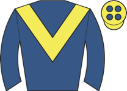 Needle Match ★ EYE | 3.75 | - | 2 | 1-4-13-2 | going✓ trip✓ | 107 | 89 | ★★★★★ | Mid-division, 4th halfway, pushed along approaching straight, ridden over 1f out, kept on | |
| 6 | 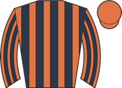 Dancing Gemini M2 ⚠ ground | 4.00 | - | 7 | 9-13-6-4-5-5 | 117 | 88 | ★★★☆☆ | Held up in touch, dropped to last when waiting for room over 3f out, ridden over 2f out, n | ||
| 1 | 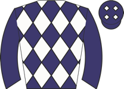 Persica ◆ 1 | 6.00 | - | 1 | 4-2-5-2-1-3 | trip✓ trk✓ | 114 | 96 | ★★★★☆ | Wore red hood to post, towards rear, pushed along over 2f out and ran on, ridden over 1f o | |
| 2 | 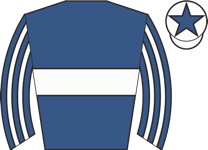 The Lost King ◆ 2 ★ EYE ▲ cls | 7.00 | - | 8 | 1-3-4-27-1-1 | trip✓ trk✓ | 109 ↑ | 93 | ★★★★☆ | Wore hood to post, soon raced in second, steadily closed on leader from halfway, led 2f ou | |
| 4 | Hankelow ⚠ ground | 7.00 | - | 5 | 1-2-1-3-13-9 | trip✓ | 113 ↑ | 95 | ★★★★☆ | Prominent, pushed along well over 2f out, weakened well over 1f out | |
| 5 | 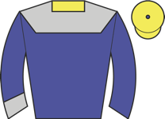 Colori Forever ◆ 3 ★ EYE | 11.00 | - | 6 | 2-1-2-1-12-2 | trip✓ trk✓ | 103 ↑ | 91 | ★★★☆☆ | Held up in rear, pushed along and taken towards centre over 1f out, ridden inside final fu | |
| 3 | 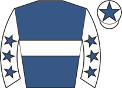 Fondo Blanco ▲ cls | 21.00 | - | 4 | 2-1-4-21-10-2 | 1r 1W | trip✓ trk✓ | 101 ↑ | 92 | ★★☆☆☆ | Led early, prominent, led again 2f out, hung right over 1f out, headed inside final furlon |
| 9 | 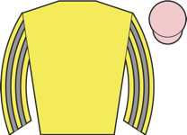 Redemption Road | 26.00 | - | 9 | 2-8-3-3-6-3 | trip✓ | 104 ↑ | - | ★★★☆☆ | Towards rear, 6th halfway, headway over 1f out, improved to 3rd inside final furlong, kept | |
| 8 | 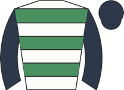 Balmacara ⚠ ground ▲ cls | 26.00 | - | 3 | 14-10-3-7-6-11 | 1r 1p | trk✓ | 100 | 93 | ★☆☆☆☆ | Went to post early in hood, took keen hold, led, two lengths clear 3f out, ridden and head |
| Res | Horse | Price | BSP | Dr | Form | Crse | Suit | OR | Spd | TF | Last comment |
|---|---|---|---|---|---|---|---|---|---|---|---|
| 1 | 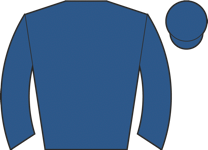 First Law ◆ 3 ▲ cls | 2.00 | - | 3 | 1 | trip✓ trk✓ | 83 | Wore hood to post, raced in last, ran green over 3f out, pushed along over 2f out, drifted | |||
| 2 | 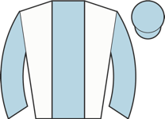 Rocket Boy ◆ 1 ★ EYE | 3.00 | - | 5 | 1-3 | trk✓ | 101 | 86 | In rear, pushed along 3f out, switched left and improved 2f out, went third approaching fi | ||
| 0 | 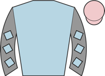 Rafe's da Man ◆ 2 ★ EYE ▲ cls | 7.50 | - | 6 | 4-4-3-1 | trk✓ | 91 | 88 | ★★★★☆ | Front rank, went second over 2f out, pressed leader going best over 1f out, soon led, ridd | |
| 3 | 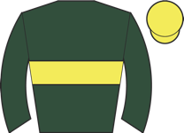 Arthurian ▲ cls | 9.00 | - | 2 | 6-2 | 1r 1p | trip✓ trk✓ | 86 | Wore hood to post, prominent, ridden to press leader over 2f out, headway to lead inside f | ||
| 4 | Romanza ▲ cls | 26.00 | - | 4 | 4-7-2-3 | trk✓ | 85 | 89 | ★★☆☆☆ | Wore hood to post, chased leader, shaken up over 2f out, edged right when ridden over 1f o | |
| 5 | 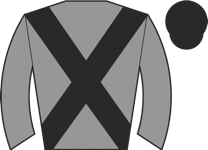 Theheatison ★ EYE ▲ cls | 51.00 | - | 1 | 5-5-1-4-3-2 | trk✓ | 75 | 90 | ★★☆☆☆ | Took keen hold, held up in rear, headway and ridden over 2f out, hung right and then switc |
| Res | Horse | Price | BSP | Dr | Form | Crse | Suit | OR | Spd | TF | Last comment |
|---|---|---|---|---|---|---|---|---|---|---|---|
| 2 | 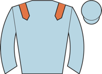 Galilean Quality ◆ 1 ★ EYE | 3.00 | - | 6 | 1-3-1-6-1-2 | trip✓ trk✓ | 96 ↑ | 95 | ★★★★★ | In rear, pushed along 4f out, headway 2f out and ridden when slightly hampered, stayed on | |
| 7 | 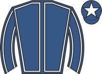 Mythical Bay ◆ 3 M2 | 3.50 | - | 3 | 1-2-3-1-1-9 | trip✓ trk✓ | 92 ↑ | 96 | ★★★☆☆ | Wore red hood to post, raced wide early, handy, ridden over 2f out, weakened over 1f out | |
| 6 | 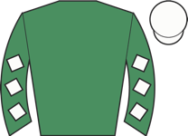 Reem Rak ▲ cls | 6.50 | - | 1 | 2-3-10-2-1-3 | trip✓ trk✓ | 80 ↑ | 86 | ★★★☆☆ | Wore hood to post, keen in fourth, shaken up over 3f out, outpaced briefly over 2f out, ke | |
| 1 | 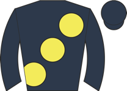 Asia Force ◆ 2 ★ EYE ▲ cls | 7.50 | - | 8 | 2-2-2-3-4-1 | trip✓ trk✓ | 83 | 91 | ★★★★☆ | Made all, pushed along 3f out, three lengths clear entering final furlong, stayed on well, | |
| 8 | 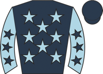 Pierre Grosse ▲ cls ⚠ IRE form | 11.00 | - | 2 | 3-2-4-2-2-8 | going✓ | 84 ↑ | 88 | ★★★☆☆ | Towards rear, pushed along 2f out and ran on, never on terms | |
| 4 | 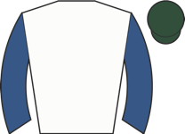 Lopeo | 13.00 | - | 4 | 4-1-5-2-2-7 | going✓ trip✓ trk✓ | 83 | 86 | ★★★☆☆ | Tracked leaders, raced in centre 6f out, ridden along over 3f out, weakened over 2f out | |
| 3 | 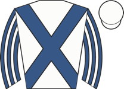 Bridge Of Eagles ▲ cls | 17.00 | - | 5 | 3-6-1-6-3-3 | trk✓ | 78 | 87 | ★★★★☆ | Prominent, ridden over 2f out, outpaced over 1f out, no extra and lost second final 110yds | |
| 5 | 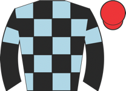 Cotton Bud ▲ cls | 34.00 | - | 7 | 4-4-2-1-6-4 | trk✓ | 72 | 86 | ★★☆☆☆ | Tracked leaders, pushed along well over 2f out, kept on one pace |
| Res | Horse | Price | BSP | Dr | Form | Crse | Suit | OR | Spd | TF | Last comment |
|---|---|---|---|---|---|---|---|---|---|---|---|
| 1 | Aegean Prince ⚠ FR form | 3.00 | - | 9 | 3-1-1-2 | trk✓ | 99 | 93 | ★★★★★ | ||
| 7 | 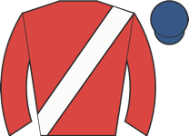 Finalise ◆ 1 M2 ▲ cls | 4.50 | - | 2 | 2-2-1-2 | trip✓ trk✓ | 91 | 97 | ★★★★☆ | Raced keenly, led, pushed along edging right from 2f out, headed and no extra inside final | |
| 4 | 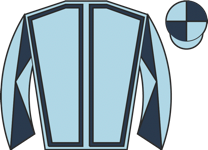 Stressfree | 7.00 | - | 7 | 5-2-7-11-8-6 | trk✓ | 97 | 93 | ★★★☆☆ | Wore red hood to post, towards rear, pushed along 3f out and closed, ridden 2f out and ran | |
| 0 | 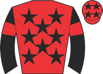 Mountain Road ◆ 2 ★ EYE | 11.00 | - | 11 | 4-3-5-1-3-2 | trk✓ | 92 | 90 | Wore hood to post, towards rear, still going okay but plenty to do 3f out, ridden and made | ||
| 0 | 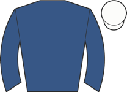 Valedictory ◆ 3 | 11.00 | - | 5 | 2-6-1-1-5-7 | trip✓ trk✓ | 95 ↑ | 94 | ★★☆☆☆ | Wore hood to post, slowly away, held up in rear of mid-division, nudged along over 4f out, | |
| 10 | 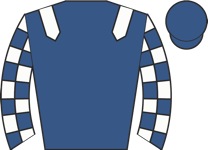 Hermetic | 11.00 | - | 14 | 1-4-4-6-4-4 | going✓ | 81 | 84 | ★★★★☆ | Wore red hood to post, chased leaders, led over 6f out, ridden and headed narrowly over 1f | |
| 3 | 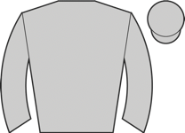 Pole Star ★ EYE ▲ cls | 11.00 | - | 12 | 3-5-11-9-5-3 | trk✓ | 83 ↓ | 78 | ★★★☆☆ | Led, headed and dropped to third after 5f, pushed along and lost third over 3f out, rallie | |
| 9 | 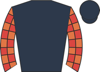 Glen To Glen ⚠ ground ▲ cls ⚠ IRE form | 11.00 | - | 8 | 18-13-9-5---1 | 80 ↑ | 99 | ★★★☆☆ | Towards rear, not fluent 7th, closed to dispute third 11th, left chasing leader 3 out, pus | ||
| 0 | 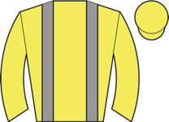 Dancing In Paris ★ EYE ⚠ ground | 13.00 | - | 6 | 4-12-9-15-5-1 | 1r | trk✓ | 93 ↓ | 84 | ★★★☆☆ | Wore red hood to post, tracked leaders, waiting for gap 2f out, pushed along and switched |
| 8 | 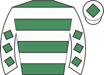 Ashnak ▲ cls | 13.00 | - | 10 | 3-8-3-4-2-7 | trk✓ | 89 | 81 | ★★★☆☆ | Mid-division, bit short of room and switched right over 2f out, never on terms, weakened i | |
| 0 | 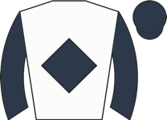 Synergism ▲ cls | 15.00 | - | 13 | 2-5-3-1-3-4 | trip✓ trk✓ | 91 ↑ | 82 | Raced in last, asked for effort over 2f out, went moderate third entering final furlong, l | ||
| 6 | 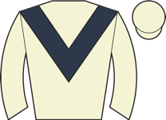 Kissmehoneyhoney ▲ cls | 21.00 | - | 1 | 1-8-2 | trk✓ | 79 | 91 | ★★★★☆ | Wore hood to post, led, headed over 2f out, soon held, plugged on same pace inside final f | |
| 2 | 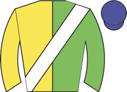 In The Breeze | 34.00 | - | 3 | 4-7-1-11-1-13 | 1r | trk✓ | 92 ↑ | 91 | ★★☆☆☆ | Wore hood to post, held up in rear, never a factor |
| 5 | 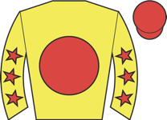 Golden West ▲ cls | 34.00 | - | 4 | 7-8-4-2-9-2 | trk✓ | 78 ↓ | 87 | ★★★☆☆ | Held up in touch, pushed along over 2f out, headway 1f out, took second near finish |
| Res | Horse | Price | BSP | Dr | Form | Crse | Suit | OR | Spd | TF | Last comment |
|---|---|---|---|---|---|---|---|---|---|---|---|
| 1 | 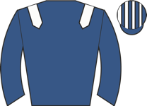 Almeraq ◆ 3 | 3.25 | - | 4 | 2-1---1-1-9 | trip✓ trk✓ | 119 ↑ | 96 | ★★★★☆ | Wore hood to post, raced centre, chased leaders, pushed along over 2f out, weakened 1f out | |
| 5 | 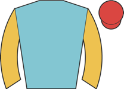 Kind Of Blue | 4.50 | - | 6 | 8-3-2-11-2-11 | 1r 1p | trip✓ trk✓ | 112 | 98 | ★★★☆☆ | Mounted in chute, went early to post, missed break, held up towards rear, switched right 2 |
| 8 | 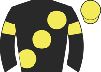 Marvelman ◆ 2 | 5.50 | - | 5 | 3-1-14-2-6-3 | going✓ trip✓ trk✓ | 117 ↑ | 97 | ★★★★☆ | Wore red hood to post, led, ridden well over 1f out, headed approaching final furlong, kep | |
| 7 | 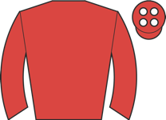 Coppull | 6.50 | - | 2 | 5-3-1-8-4-1 | trip✓ trk✓ | 115 ↑ | 95 | ★★★☆☆ | Prominent, switched to far side 4f out, led 2f out, ridden over 1f out, drifted left to fa | |
| 2 | 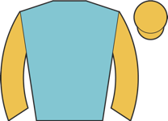 Paborus ◆ 1 | 9.00 | - | 8 | 7-1-1-3-1-8 | trip✓ trk✓ | 113 ↑ | 98 | ★★★★★ | Wore red hood to post, front mid-division, improved into third 3f out, ridden over 1f out, | |
| 3 | 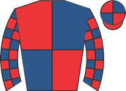 Big Mojo ★ EYE | 9.00 | - | 7 | 1-10-7-8-10-1 | 1r 1W | trip✓ trk✓ | 113 | 94 | ★★★☆☆ | Tracked leader, 2nd halfway, pushed along 2f out, ridden and led early final furlong, kept |
| 0 | 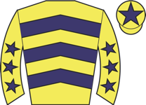 American Affair | 15.00 | - | 1 | 10-2-26-6-1-12 | 1r 1p | trk✓ | 112 | 98 | Wore hood to post, slow into stride, soon recovered and prominent, pushed along over 2f ou | |
| 4 | James's Delight ★ EYE | 21.00 | - | 3 | 1-17-15-6-3-3 | 1r | trip✓ | 106 | 95 | ★★☆☆☆ | Tracked leaders, 4th halfway, pushed along over 2f out, 3rd and switched right over 1f out |
| 6 | 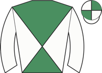 Aramram ▲ cls | 26.00 | - | 9 | 1-1-2-5-15-5 | going✓ trip✓ trk✓ | 108 ↑ | 96 | ★★☆☆☆ | Raced far side, prominent, pushed along over 2f out, ridden to lead far side over 1f out, |
| Res | Horse | Price | BSP | Dr | Form | Crse | Suit | OR | Spd | TF | Last comment |
|---|---|---|---|---|---|---|---|---|---|---|---|
| 2 | 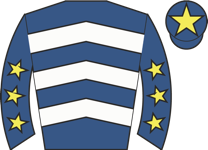 Trilby ◆ 1 ★ EYE ⚠ draw ▲ cls | 4.33 | - | 5 | 1-3-1-15-4-1 | 1r 1W | going✓ trip✓ trk✓ | 88 ↑ | 101 | ★★★★★ | Raced in last, shaken up over 2f out, kept on well over 1f out, led clearly inside final f |
| 3 | 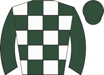 Elara May M2 ★ EYE ▲ cls | 6.00 | - | 2 | 3-1-4-8-4-2 | trip✓ trk✓ | 83 | 95 | ★★★★☆ | Raced in last, waiting for room over 2f out, went second over 1f out, kept on inside final | |
| 4 | 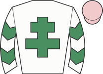 Jer Batt M2 ⚠ ground ▲ cls | 6.00 | - | 10 | 7-7-3-3-4-5 | 1r | trk✓ draw✓ | 80 ↓ | 97 | ★★★☆☆ | Chased leaders, led over 1f out, headed well inside final furlong, no extra close home |
| 6 | Advertised ▲ cls | 6.50 | - | 8 | 1-4-2-9-11-2 | trip✓ trk✓ draw✓ | 93 ↑ | 96 | ★★★☆☆ | Tracked leaders, pushed along 2f out, ridden and went second over 1f out, stayed on, no te | |
| 9 | 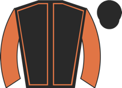 Arklow Lad | 7.50 | - | 7 | 1-3-1-5-1-11 | trip✓ trk✓ draw✓ | 92 ↑ | 97 | ★★★☆☆ | Went to post early wearing red hood, mid-division, pushed along 2f out, weakened over 1f o | |
| 1 | 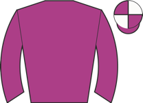 Poatan ◆ 3 ⚠ draw | 9.00 | - | 4 | 3-5-1-3-3-7 | trk✓ | 97 ↑ | 98 | ★★★☆☆ | Midfield, ridden and headway 2f out, kept on same pace inside final furlong | |
| 0 | 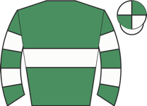 Toyotomi ◆ 2 ⚠ draw | 11.00 | - | 6 | 5-6-3-1-19-6 | going✓ trk✓ | 94 | 101 | ★★★☆☆ | Mounted in chute and wore hood to post, raced far side, held up in rear, ridden over 1f ou | |
| 5 | Marching Mac ▲ cls | 13.00 | - | 3 | 4-10-4-3-1-4 | trip✓ trk✓ | 83 | 97 | ★★★☆☆ | Wore hood to post, led but pestered, ridden and two lengths clear 2f out, reduced advantag | |
| 8 | 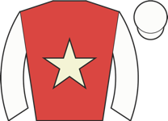 Sturlasson ▲ cls | 15.00 | - | 9 | 4-5-2-9-4-10 | trip✓ trk✓ draw✓ | 86 | 98 | ★★★☆☆ | Mid-division, pushed along before halfway, weakened over 1f out | |
| 7 | 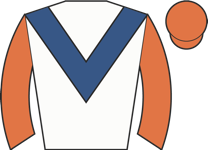 Black Star Boy | 26.00 | - | 1 | 1-8-1-6-15-12 | trip✓ trk✓ | 90 | 96 | ★★★☆☆ | Wore hood to post, towards rear, ridden and headway over 2f out, never competitive |
| Res | Horse | Price | BSP | Dr | Form | Crse | Suit | OR | Spd | TF | Last comment |
|---|---|---|---|---|---|---|---|---|---|---|---|
| 2 | Rhoscolyn ◆ 3 ★ EYE | 5.50 | - | 12 | 11-5-19-13-8-2 | trip✓ draw✓ | 82 ↓ | 96 | ★★★★☆ | Midfield, ridden and headway over 2f out, stayed on inside final furlong, not trouble winn | |
| 6 | Ata Rangi ◆ 1 M2 ▼ cls | 6.00 | - | 11 | 7-5-5-1-4-8 | 1r 1W | trip✓ trk✓ draw✓ | 87 | 94 | ★★★☆☆ | Front mid-division, pushed along 2f out, no progress |
| 1 | Brian ⚠ draw | 6.50 | - | 2 | 9-7-10-8-7-2 | trip✓ | 90 ↓ | 95 | ★★★☆☆ | Midfield, switched right and ridden 2f out, headway to chase winner inside final 110yds, n | |
| 10 | Montezin ▲ cls | 7.50 | - | 9 | 13-4-4-8-5-1 | 1r 1W | trip✓ trk✓ draw✓ | 78 | 90 | ★★★☆☆ | Slowly into stride, in rear of mid-division, ridden over 2f out, kept on and headway over |
| 5 | Brighton Boy ★ EYE | 8.00 | - | 10 | 2-6-12-6-11-3 | trip✓ draw✓ | 83 | 96 | ★★★★★ | 3 prominent, shaken up to press leader over 1f out, soon briefly outpaced, kept on inside | |
| 0 | Cape Ashizuri ◆ 2 ⚠ draw ▼ cls | 11.00 | - | 3 | 1-5-2-1-19-4 | trk✓ | 90 | 94 | ★★☆☆☆ | Earplugs removed at start, led, headed after a furlong, remained tracking leaders, pushed | |
| 9 | Sergeant Wilko ⚠ ground ▼ cls | 11.00 | - | 5 | 19-4-6-8-2-8 | trip✓ | 86 | 96 | ★★★☆☆ | Disputed lead, ridden and headed 2f out, weakened 1f out | |
| 8 | Korker ▼ cls | 11.00 | - | 6 | 13-8-10-6-4-8 | 1r | 87 ↓ | 94 | ★★★☆☆ | Held up towards rear, raced keenly, ridden over 2f out, weakened over 1f out | |
| 4 | King Of Thunder ▼ cls | 13.00 | - | 7 | 4-6-12-1-6 | 1r 1W | trip✓ trk✓ | 78 | 90 | ★★☆☆☆ | Wore hood to post, took keen hold, in touch with leaders, ridden over 2f out, soon chased |
| 11 | Wreck It Ryley ▲ cls | 15.00 | - | 8 | 3-8-9-6-3-7 | trk✓ | 76 | 95 | ★★★☆☆ | Rear mid-division, pushed along before halfway, never going pace | |
| 3 | Darkness ⚠ draw ▼ cls | 17.00 | - | 4 | 6-10-11-12-6-6 | 1r | 85 ↓ | 91 | ★★★★☆ | Held up in rear, soon switched right, headway over 1f out, never dangerous | |
| 7 | Star Anthem ⚠ draw | 26.00 | - | 1 | 9-3-12-8-27-11 | 1r | 89 ↓ | 88 | ★★★★☆ | Went to post early in hood, took keen hold, in touch with leaders, not clear run and lost |
| Res | Horse | Price | BSP | Dr | Form | Crse | Suit | OR | Spd | TF | Last comment |
|---|---|---|---|---|---|---|---|---|---|---|---|
| 5 | Crown Office ★ EYE | 4.50 | - | 1 | 5-1-13-4-6-2 | going✓ trk✓ | 82 | 89 | ★★★★★ | Raced with earplugs, slowly away, took keen hold, in touch in rear, went third after 4f ou | |
| 10 | The Sweet Escape ◆ 2 M2 ★ EYE ▲ cls | 5.00 | - | 5 | 4-6-1-1-2-1 | trip✓ trk✓ | 76 ↑ | 91 | ★★★★☆ | Prominent, led 2f out, ridden over 1f out, ran on well | |
| 2 | Military Leader ◆ 1 ★ EYE ▲ cls | 5.50 | - | 8 | 1-3-2-2-2-1 | trip✓ trk✓ | 82 ↑ | 95 | ★★★★☆ | Raced wide early, joined rest after 3 furlongs, mid-division, smooth headway on outer 3f o | |
| 4 | Final Night | 6.00 | - | 7 | 2-3-6-10-2-2 | trip✓ | 82 | 91 | ★★★☆☆ | Held up in mid-division, headway and switched right over 1f out, led inside final furlong, | |
| 7 | Jungle Ruler | 7.50 | - | 11 | 4-4-5-4-3-2 | trip✓ trk✓ | 85 ↓ | 91 | ★★★☆☆ | Pressed winner, ridden 2f out, no impression inside final furlong, kept on | |
| 6 | Caim ▼ cls | 11.00 | - | 6 | 1-2-4-9 | going✓ trk✓ | 87 | 92 | ★★☆☆☆ | Wore hood to post, midfield, soon raced on far side rail, outpaced over 1f out, weakened i | |
| 9 | Metal Merchant | 17.00 | - | 12 | 12-20-13-14-4-9 | 82 ↓ | 92 | ★★☆☆☆ | Rear of mid-division, some headway under 2f out, no impression, well beaten final furlong | ||
| 8 | Miletus | 21.00 | - | 10 | 2-6-3-1-5-5 | trk✓ | 81 | 93 | ★★☆☆☆ | In touch in mid-division, outpaced and carried head high over 1f out, weakened inside fina | |
| 12 | Yanifer ⚠ ground ▼ cls | 21.00 | - | 4 | 1-9-12-14-4-10 | 1r | trip✓ | 85 ↓ | 93 | ★★☆☆☆ | Keen in third, ridden over 2f out, soon outpaced, carried right over 1f out, soon weakened |
| 11 | Kindest Nation ★ EYE | 21.00 | - | 9 | 1-4-9-6-10-3 | trk✓ | 72 | 90 | ★★☆☆☆ | Slowly away, held up towards rear of mid-division, headway over 1f out, kept on inside fin | |
| 1 | Monoceros ⚠ IRE form | 21.00 | - | 3 | 3---3-5-9-5 | trk✓ | 81 ↓ | 94 | ★★★☆☆ | Towards rear, progress into mid division over 2f out, soon ridden and no extra over 1f out | |
| 3 | Bearin Up ◆ 3 ▼ cls | 34.00 | - | 2 | 1-5-1-2-5-10 | trip✓ trk✓ | 77 ↑ | 93 | ★★☆☆☆ | Midfield, ridden along over 2f out, no extra and faded over 1f out |
| Res | Horse | Price | BSP | Dr | Form | Crse | Suit | OR | Spd | TF | Last comment |
|---|---|---|---|---|---|---|---|---|---|---|---|
| 4 | Forest Berry ◆ 1 ★ EYE ▲ cls | 3.00 | - | 8 | 2-4-2-4-1-1 | going✓ trip✓ trk✓ | 77 | 92 | ★★★☆☆ | Midfield, headway and took second 3f out, led over 1f out, ridden inside final furlong, ra | |
| 3 | Woodhay Wayfarer M2 | 4.00 | - | 3 | 8-5-5-1 | 1r | trip✓ trk✓ | 74 | 90 | ★★★★☆ | Prominent, ridden over 2f out, headway to press leader entering final furlong, soon led, a |
| 5 | Greek Symphony ◆ 2 | 4.50 | - | 2 | 3-2-1-3-3 | going✓ trk✓ | 73 | 91 | ★★★★★ | Held up in rear, headway 2f out, briefly led inside final furlong, headed inside final 110 | |
| 2 | Pequenita ◆ 3 | 6.00 | - | 6 | 4-3-2 | 1r | going✓ trip✓ trk✓ | 71 | 92 | ★★★☆☆ | Led, set strong pace, faced challenge 2f out, ridden when headed just inside final furlong |
| 6 | Crazy Cubana ▼ cls | 17.00 | - | 4 | 1-19-3-17 | trk✓ | 71 | 86 | ★★★☆☆ | Took keen hold, held up in mid-division, bumped and carried left over 1f out, soon faded | |
| 1 | Magnesium ▼ cls | 21.00 | - | 1 | 7-1-18-10 | 1r 1W | going✓ trk✓ | 71 | 91 | ★★☆☆☆ | Raced in centre, chased leader, lost position and ridden over 2f out, soon well beaten |
| 8 | Golden Oasis | 21.00 | - | 7 | 8-5-1-- | 1r | 68 | 90 | ★★☆☆☆ | Saddle slipped backwards, started broncing and unseated rider soon after start | |
| 7 | Attack Attack ▼ cls | 26.00 | - | 5 | 11-10-3-5 | trk✓ | 69 | 86 | ★☆☆☆☆ | Held up in rear, outpaced over 1f out, hung left and modest headway inside final 110yds, n |
| Res | Horse | Price | BSP | Dr | Form | Crse | Suit | OR | Spd | TF | Last comment |
|---|---|---|---|---|---|---|---|---|---|---|---|
| 9 | Cavolo Nero ◆ 1 ★ EYE ▲ cls | 4.50 | - | 11 | 3-2-3-4-1-1 | 2r 1W | going✓ trip✓ trk✓ | 92 | 96 | ★★★★★ | Held up in rear, waiting for room over 1f out, ran on well inside final furlong, led appro |
| 2 | Victory Ace ◆ 2 M2 ★ EYE ▲ cls | 6.50 | - | 7 | 2-6-5-1-1-1 | 3r 2W | going✓ trip✓ trk✓ | 89 ↑ | 96 | ★★★★☆ | Midfield, closed on leaders 2f out, ran on strongly and led just over 1f out, soon went cl |
| 8 | Warrior Mode ★ EYE ▲ cls | 7.50 | - | 5 | 4-3-8-11-3-1 | 2r 1W | going✓ trip✓ trk✓ | 85 ↓ | 95 | ★★★☆☆ | Held up towards rear, headway on outside over 1f out, led inside final furlong, stayed on |
| 5 | Nikovo ★ EYE ▲ cls | 9.00 | - | 4 | 8-5-4-3-3-1 | trk✓ | 92 | 95 | ★★★☆☆ | Held up in rear, switched left and headway 2f out, switched left 1f out, led inside final | |
| 6 | The Liffey ◆ 3 ▲ cls | 11.00 | - | 1 | 1-1-5-1-1-2 | 1r 1W | going✓ trip✓ trk✓ | 91 | 94 | ★★★☆☆ | Took keen hold, in touch with leaders, ridden 2f out, headway entering final furlong, soon |
| 10 | Two Tempting | 11.00 | - | 6 | 3-2-3-3-17-4 | going✓ trip✓ trk✓ | 98 | 97 | ★★★☆☆ | Slowly into stride and chased along start, midfield, headway and ridden over 1f out, press | |
| 1 | Exposure ▲ cls | 11.00 | - | 3 | 6-5-7-4-3-4 | 1r | trk✓ | 85 | 94 | ★★☆☆☆ | Wore hood to start, midfield, headway to chase leaders 1f out, switched right and every ch |
| 12 | Supido ⚠ ground ▼ cls ⚠ FR form | 11.00 | - | 10 | 8-1-3-7-4-19 | 1r | trip✓ trk✓ | 94 | 94 | ★★☆☆☆ | |
| 13 | Percy's Lad ▲ cls | 13.00 | - | 2 | 13-6-2-6-1-5 | 2r 1W | going✓ trip✓ trk✓ | 89 | 96 | ★★★☆☆ | Chased leaders, pushed along over 2f out, ridden over 1f out, no impression final furlong |
| 3 | Popmaster | 17.00 | - | 13 | 2-7-15-4-4-6 | going✓ trip✓ | 96 | 94 | ★★★☆☆ | Wore red hood to post, mid-division, ridden over 1f out, soon slightly checked, stayed on | |
| 4 | I'm Workin On It ▲ cls | 17.00 | - | 9 | 4-4-1-2-12-4 | 5r 1W | going✓ trk✓ | 86 ↑ | 96 | ★★★☆☆ | Prominent, pushed along 2f out, stayed on, not pace to challenge |
| 7 | Blue Prince | 26.00 | - | 14 | 3-1-3-3-1-7 | 1r 1p | trip✓ trk✓ | 84 ↑ | 95 | ★★☆☆☆ | Raced in rear of mid-division, ridden over 2f out, headway over 1f out, kept on to pass be |
| 11 | Vincent Rocks ▲ cls | 26.00 | - | 12 | 9-20-3-10-2-5 | 1r 1p | going✓ trip✓ trk✓ | 83 | 92 | ★★☆☆☆ | Held up in rear, switched left when shaken up 2f out, ridden and steady headway over 1f ou |
| 14 | Dingle | 34.00 | - | 8 | 1-7-3-11-22-10 | going✓ trip✓ trk✓ | 88 | 87 | ★☆☆☆☆ | Edged left start, chased leaders, ridden over 2f out, weakened over 1f out, hampered 1f ou |
| Res | Horse | Price | BSP | Dr | Form | Crse | Suit | OR | Spd | TF | Last comment |
|---|---|---|---|---|---|---|---|---|---|---|---|
| 2 | Gethin ◆ 1 | 2.62 | - | 3 | 1-2-2-1-2-5 | 1r 1W | going✓ trip✓ trk✓ | 117 ↑ | 96 | ★★★★★ | Took keen hold, prominent, headway 3f out, ridden and led narrowly over 2f out, headed and |
| 0 | Tornado Alert ◆ 3 M2 | 3.50 | - | 7 | 3-1-4-6-2 | going✓ trk✓ | 116 | 96 | ★★★★☆ | Wore hood to post, raced in second, shaken up to challenge over 2f out, ridden and not pac | |
| 4 | Constitution Hill ◆ 2 ★ EYE ▲ cls | 6.00 | - | 2 | ----5---1-1 | 1r 1W | going✓ trip✓ trk✓ | 101 ↓ | 96 | ★★★★☆ | Took keen hold in midfield, smooth progress into third over 1f out, shaken up to lead 1f o |
| 1 | Pride Of Arras | 6.00 | - | 4 | 17-10-1-4-8-2 | trip✓ trk✓ | 114 | 88 | ★★★★☆ | Led, ridden 3f out, edged right 2f out, headed over 1f out, no impression on winner final | |
| 3 | Warrant Holder ▲ cls | 15.00 | - | 1 | 2-3-1-1-2-10 | going✓ trip✓ trk✓ | 111 ↑ | 90 | ★★★☆☆ | Wore red hood to post, front mid-division, pushed along 3f out, no impression when hampere | |
| 0 | Almeric | 17.00 | - | 5 | 1-1-9-3-3-3 | trk✓ | 112 | 94 | ★★☆☆☆ | Held up in rear, pushed along over 3f out, chased leaders over 1f out, soon outpaced, hung | |
| 5 | Dubai Future | 34.00 | - | 6 | 6-6-8-4-1-9 | trk✓ | 113 | 80 | ★★☆☆☆ | Wore hood to post, always towards rear |
| Res | Horse | Price | BSP | Dr | Form | Crse | Suit | OR | Spd | TF | Last comment |
|---|---|---|---|---|---|---|---|---|---|---|---|
| 1 | Moonrise ◆ 2 ⚠ draw | 3.50 | - | 9 | 1-2-1 | 1r 1W | going✓ trip✓ trk✓ | 100 | 94 | ★★☆☆☆ | Wore red hood to post, raced far side, chased leaders, travelled strongly and improved 2f |
| 0 | Evenfall ⚠ draw ▲ cls | 3.75 | - | 10 | 1-1 | trip✓ trk✓ | 92 | 94 | Held up in rear, switched left and headway from over 2f out, led 1f out, ridden and edged | ||
| 5 | Tawakal ◆ 3 ▲ cls | 4.33 | - | 1 | 1-2 | trip✓ trk✓ draw✓ | 93 | 94 | Led, a length ahead 2f out, soon pushed along, kept on entering final furlong, reduced adv | ||
| 7 | Adaay Of Scarlett ◆ 1 ★ EYE | 4.50 | - | 4 | 1-2-2-2-2-5 | trip✓ trk✓ | 106 | 96 | ★★★★☆ | Held up in rear, pushed along over 2f out, made no impression on leaders when ridden over | |
| 0 | Agamemnon ⚠ draw | 7.00 | - | 8 | 6-1-8-3-2-4 | going✓ trip✓ trk✓ | 104 ↑ | 96 | ★★★☆☆ | Led, pushed along over 2f out, ridden and headed over 1f out, faded inside final furlong | |
| 3 | Social Symbol ⚠ draw | 11.00 | - | 7 | 1-4-4-3 | trk✓ | 96 | 95 | ★★☆☆☆ | ||
| 8 | Efsixteen | 13.00 | - | 5 | 1-4 | trk✓ | 88 | 95 | Held up in mid-division, switched left and headway over 1f out, went fourth and switched l | ||
| 2 | Shimmering Sun | 15.00 | - | 6 | 1-7-2-14 | trk✓ | 94 | 91 | ★★★☆☆ | Led, pushed along and headed over 2f out, outpaced entering final furlong, eased inside fi | |
| 4 | Nicely ▲ cls | 26.00 | - | 2 | 2-1-6-1 | trip✓ trk✓ draw✓ | 89 | 94 | ★★☆☆☆ | Wore hood to post, prominent, ridden over 2f out, headway to challenge leader strongly ins | |
| 6 | Bated Benevolence ▲ cls | 34.00 | - | 3 | 1-16-1-2 | going✓ trip✓ trk✓ draw✓ | 86 | 95 | ★★☆☆☆ | Raced in second, pressed leader over 2f out, soon led, ridden over 1f out, faced sustained |
| Res | Horse | Price | BSP | Dr | Form | Crse | Suit | OR | Spd | TF | Last comment |
|---|---|---|---|---|---|---|---|---|---|---|---|
| 1 | Veil Of Clouds ◆ 3 ▲ cls | 3.50 | - | 4 | 5-2-5-3-1 | 1r | going✓ trip✓ trk✓ | 77 | 95 | ★★★★★ | Made all, went steadily clear from 2f out, pushed out, easily |
| 4 | Zighy ◆ 1 M2 ⚠ draw | 4.00 | - | 9 | 1-1-4-3-2-3 | going✓ trip✓ trk✓ | 81 ↑ | 94 | ★★★☆☆ | Raced near side, in touch with leader, ridden 2f out, soon chased leaders, kept on final 1 | |
| 6 | Shallow ⚠ draw | 5.00 | - | 8 | 3-2-9-2-19-2 | trip✓ trk✓ | 78 | 95 | ★★★★☆ | Wore hood to post, went slightly right start, took keen hold, raced near side, led, ridden | |
| 7 | Rumble Ruby ⚠ ground ▲ cls | 6.50 | - | 6 | 10-3-1-4-1-3 | trip✓ trk✓ | 75 | 93 | ★★★☆☆ | Raced far side, midfield, shaken up 2f out, headway over 1f out, challenged 1f out, drifte | |
| 9 | Eskimo Pie ⚠ draw | 13.00 | - | 10 | 8-3-6-4-5-1 | 1r 1p | trip✓ trk✓ | 80 ↓ | 92 | ★★☆☆☆ | Made all, unchallenged, comfortably |
| 8 | Paradise Walk ◆ 2 ▼ cls | 17.00 | - | 5 | 2-4-1-1-4-17 | going✓ trip✓ trk✓ | 79 | 94 | ★★★☆☆ | Mid-division far side, pushed along over 2f out, no progress | |
| 3 | Powdering | 17.00 | - | 1 | 3-6-14-1-3-7 | trip✓ trk✓ draw✓ | 79 | 93 | ★★☆☆☆ | Raced far side, chased winner, ridden and lost position 2f out, weakened final furlong | |
| 10 | Calling A Star | 17.00 | - | 7 | 2-1-7-1-4-22 | 1r 1p | going✓ trip✓ trk✓ | 77 ↑ | 90 | ★★☆☆☆ | Wore hood to post, raced near side, mid-division, pushed along over 2f out, short of room |
| 5 | Tarot ⚠ draw | 21.00 | - | 11 | 2-3-1-7-6-6 | 2r 1W | going✓ trip✓ trk✓ | 80 | 93 | ★★☆☆☆ | Led, headed after 3f, pushed along over 2f out, ridden over 1f out, weakened quickly insid |
| 2 | Lady Roxby | 34.00 | - | 2 | 2-3-7-7-7-9 | 1r 1p | trip✓ trk✓ draw✓ | 79 | 93 | ★★☆☆☆ | Wore hood to post, held up in touch, asked for effort 2f out, soon beaten |
| 11 | Lope El Fuego | 67.00 | - | 3 | 5-1-3-10-9-9 | trip✓ trk✓ draw✓ | 77 | 92 | ★☆☆☆☆ | Wore hood to post, prominent, ridden 2f out, weakened over 1f out |
| Res | Horse | Price | BSP | Dr | Form | Crse | Suit | OR | Spd | TF | Last comment |
|---|---|---|---|---|---|---|---|---|---|---|---|
| 1 | Primo Lara ◆ 1 ▼ cls | 3.50 | - | 3 | 6-2-5-1-1-4 | going✓ trip✓ trk✓ | 86 ↑ | 92 | ★★★★★ | Slowly into stride, prominent, ridden over 2f out, disputed lead briefly over 1f out, no e | |
| 2 | Tiernan ◆ 3 M2 ▼ cls | 5.00 | - | 11 | 22-6-11-2-1-5 | trk✓ | 85 ↓ | 94 | ★★★☆☆ | Mid-division, pushed along 2f out, stayed on one pace 1f out, never a danger | |
| 4 | Whitcombe Rockstar ▼ cls | 8.50 | - | 1 | 5-1-1-2-13-4 | 3r 2W | going✓ trip✓ trk✓ | 93 ↑ | 89 | ★★★★☆ | Prominent, ridden and lost place over 2f out, kept on one pace |
| 6 | Astro King | 9.00 | - | 4 | 9-12-11-14-5-4 | 95 ↓ | 91 | ★★☆☆☆ | Wore hood to post, in touch in rear, ridden 3f out, weakened final furlong | ||
| 11 | Majestic | 9.00 | - | 10 | 19-7-4-2-10-3 | 88 ↓ | 85 | ★★☆☆☆ | Held up in touch, asked for effort over 2f out, progress 1f out, stayed on | ||
| 3 | Elsass ▼ cls | 11.00 | - | 8 | 1-1-10-3-7-7 | going✓ trk✓ | 85 ↑ | 90 | ★★☆☆☆ | Towards rear, pushed along 3f out and improved, no impression over 1f out and faded | |
| 7 | Topteam ◆ 2 ▼ cls | 13.00 | - | 9 | 4-7-1-5-2-12 | 1r 1W | going✓ trip✓ trk✓ | 91 | 87 | ★★★☆☆ | Raced wide early, soon led, ridden and headed 2f out, weakened over 1f out |
| 8 | King's Code | 13.00 | - | 7 | 10-16-5-1-8-8 | trk✓ | 94 | 90 | ★★★☆☆ | Midfield, pushed along over 2f out, ridden when dropped to last over 1f out, weakened towa | |
| 9 | Sudu | 15.00 | - | 2 | 4-5-4-1-8-6 | trip✓ | 83 ↑ | 89 | ★★☆☆☆ | Raced in third, lost third 3f out, soon pushed along, weakened over 1f out | |
| 5 | Haku ▼ cls | 21.00 | - | 5 | 5-1-3-7-3-8 | 2r | going✓ trip✓ trk✓ | 95 ↓ | 77 | ★★★☆☆ | Chased leaders, pushed along over 3f out, weakened over 1f out |
| 10 | Incensed ▼ cls | 21.00 | - | 6 | 9-2-3-8-5-13 | 1r 1p | going✓ trip✓ trk✓ | 89 | 82 | ★★★☆☆ | Dwelt start, held up in rear, struggling 3f out, tailed off over 1f out |
| Res | Horse | Price | BSP | Dr | Form | Crse | Suit | OR | Spd | TF | Last comment |
|---|---|---|---|---|---|---|---|---|---|---|---|
| 1 | Naval Tribute ◆ 1 | 2.88 | - | 4 | 6-1-7-1-2-1 | 1r 1W | going✓ trip✓ trk✓ | 81 ↑ | 87 | ★★★☆☆ | Held up in touch, headway out wide over 3f out, pushed along into second over 2f out, led |
| 4 | An Bradan Feasa M2 ▲ cls | 4.00 | - | 2 | 2-3-2-3-2-2 | going✓ trip✓ trk✓ | 74 ↓ | 77 | ★★★★☆ | Prominent, shaken up to lead over 1f out, drifted left final furlong, headed near finish, | |
| 3 | Campeona ◆ 2 ⚠ ground ▼ cls | 4.50 | - | 6 | 7-2-1-1-1-2 | trip✓ trk✓ | 74 ↑ | 78 | ★★★☆☆ | Midfield, progress 3f out, soon pushed along, led over 1f out, headed final furlong, edged | |
| 2 | Flash Kozo ▲ cls | 5.00 | - | 3 | 4-3-11-5-1-2 | going✓ trk✓ | 72 | 86 | ★★★★★ | Took keen hold, soon pressing leader, hung right from over 1f out, every chance entering f | |
| 6 | Betelgeuse ◆ 3 ▲ cls | 15.00 | - | 1 | 2-5-3-2-5-3 | going✓ trip✓ trk✓ | 66 | 86 | ★★★☆☆ | Dwelt, held up in rear, pushed along 2f out, ran on past beaten rivals final 110yds, never | |
| 5 | Barenboim ⚠ ground | 26.00 | - | 5 | 6-9-8-9-3-11 | 2r 1p | trk✓ | 75 | 71 | ★★☆☆☆ | Chased leaders, lost position over 4f out, dropped to rear and struggling over 3f out, tai |
| Res | Horse | Price | BSP | Dr | Form | Crse | Suit | OR | Spd | TF | Last comment |
|---|---|---|---|---|---|---|---|---|---|---|---|
| 1 | Thunder Call ◆ 1 | 2.20 | - | 10 | 10-2-1-1-3-2 | 1r 1p | going✓ trk✓ | 93 | 96 | ★★★★★ | Earplugs removed at start, mid-division, headway over 2f out, pushed along 1f out and ran |
| 7 | Ghost Mode M2 | 5.00 | - | 4 | 7-9-14-6-1-5 | 1r | going✓ trip✓ | 97 | 93 | ★★★☆☆ | Soon led, ridden and headed 2f out, weakened inside final furlong |
| 4 | Addison Grey ◆ 2 | 6.00 | - | 5 | 2-2-5-3-9-1 | going✓ trip✓ trk✓ | 97 | 94 | ★★★☆☆ | Wore hood to post, midfield, shaken up and progress between horses over 1f out, drifted le | |
| 3 | Two Tribes | 6.50 | - | 7 | 11-12-7-2-27-5 | 2r 1p | going✓ trip✓ trk✓ | 103 | 90 | ★★★★☆ | Rear mid-division, pushed along and some headway over 2f out, ridden and no impression ove |
| 0 | Northern Express ◆ 3 | 9.00 | - | 8 | 6-3-5-5-1-3 | going✓ trip✓ | 97 | 92 | ★★★★☆ | Chased leaders, pushed along well over 2f out, ridden well over 1f out, stayed on final fu | |
| 6 | Mubasimah | 15.00 | - | 1 | 2-6-15-5-23-7 | going✓ trip✓ | 96 | 93 | ★★☆☆☆ | Wore hood to post, in touch with leaders, soon edged left towards far side, pushed along o | |
| 5 | Silver Ghost ▲ cls | 15.00 | - | 9 | 6-6-3-2-10-15 | going✓ trip✓ | 91 | 92 | ★★☆☆☆ | Wore hood to post, went right start, midfield, ridden and no impression over 1f out | |
| 0 | Lord Britain ⚠ ground ▼ cls | 21.00 | - | 3 | 8-4-11-1-5-8 | trip✓ | 98 ↑ | 92 | Wore red hood to post, chased leaders, pushed along over 2f out, soon dropped away | ||
| 8 | Glenfinnan ▲ cls | 26.00 | - | 2 | 1-9-4-2-12-1 | going✓ trip✓ trk✓ | 82 | 92 | ★★★☆☆ | Went to post early, took keen hold, midfield, chased leaders after 1f, going okay 2f out, | |
| 2 | The Fingal Raven ⚠ ground | 51.00 | - | 6 | 5-5-16-9-3-9 | 92 | 90 | ★★☆☆☆ | Always towards rear |
| Res | Horse | Price | BSP | Dr | Form | Crse | Suit | OR | Spd | TF | Last comment |
|---|---|---|---|---|---|---|---|---|---|---|---|
| 8 | Heyzoom ◆ 2 | 2.25 | - | 6 | 3-2-1-4 | going✓ trk✓ | 90 | 92 | ★★★★★ | Midfield, ridden and edged left when bumped 2f out, kept on final furlong | |
| 3 | Archers Bay ◆ 1 M2 ★ EYE ▲ cls | 6.00 | - | 8 | 3-1-1-3-4-1 | 1r 1W | going✓ trip✓ trk✓ | 99 | 89 | ★★★★☆ | Chased leaders, closed up 3f out, pushed along and led over 1f out, soon ridden and stayed |
| 6 | Ancestor ★ EYE ▲ cls | 7.00 | - | 7 | 4-1-1 | going✓ | 92 | 78 | ★★★☆☆ | Led, pushed along over 3f out, headed and ridden over 1f out, rallied inside final furlong | |
| 2 | Decade Of Time ◆ 3 | 8.00 | - | 1 | 3-1-1-2-4 | going✓ trk✓ | 95 | 90 | ★★★☆☆ | Wore hood to post, in rear early, headway to track leaders after 2f, pushed along over 2f | |
| 9 | Into The Light | 11.00 | - | 9 | 1-2-2-11-1-15 | going✓ trip✓ trk✓ | 96 ↑ | 92 | ★★★★☆ | Fly jumped start, rear mid-division, pushed along 3f out, weakened over 1f out | |
| 5 | Cape Fear ▲ cls | 15.00 | - | 3 | 3-2-1-3-2-1 | going✓ trip✓ | 85 | 89 | ★★☆☆☆ | Midfield, headway 3f out, pushed along 2f out, ridden and led when hung right over 1f out, | |
| 7 | Guildmaster ⚠ ground | 15.00 | - | 5 | 1-3-7-8 | 99 | 93 | ★★★☆☆ | Wore hood to post, raced wide early, close up, led 3f out, ridden and headed 2f out, no ex | ||
| 1 | Turty Tree ▼ cls ⚠ FR form | 17.00 | - | 4 | 3-3-4-1-2-6 | going✓ | 90 | 90 | ★★☆☆☆ | ||
| 4 | Lord D'or | 34.00 | - | 2 | 6-2-2-2-2 | going✓ | 81 | 89 | ★☆☆☆☆ | Tracked leader, led over 2f out, soon re-challenged, ridden over 1f out, headed narrowly o |
| Res | Horse | Price | BSP | Dr | Form | Crse | Suit | OR | Spd | TF | Last comment |
|---|---|---|---|---|---|---|---|---|---|---|---|
| 3 | Dannahue ◆ 2 ▲ cls | 2.75 | - | 2 | 2 | going✓ trip✓ | 88 | Mid-division, shaken up over 2f out, good headway over 1f out, made sustained challenge in | |||
| 1 | Pensando A Te ◆ 1 ★ EYE ▲ cls | 3.25 | - | 3 | 2 | going✓ trip✓ | 92 | Held up in touch, ridden over 2f out, headway over 1f out, stayed on strongly final furlon | |||
| 2 | Asheyra ▲ cls | 4.00 | - | 1 | 3 | 88 | Held up in rear, closed on leaders 2f out, soon took third, chased leading pair inside fin | ||||
| 4 | La Pittura ◆ 3 | 6.00 | - | 4 | unraced | - |
| Res | Horse | Price | BSP | Dr | Form | Crse | Suit | OR | Spd | TF | Last comment |
|---|---|---|---|---|---|---|---|---|---|---|---|
| 1 | Gavriel ◆ 1 ▲ cls | 2.25 | - | 2 | 4-1-2 | 95 | 94 | ★★★★★ | Held up behind leaders, ridden and headway over 1f out, quickened to lead 1f out, headed i | ||
| 4 | Kahin ◆ 2 M2 ★ EYE ▲ cls | 4.00 | - | 6 | 7-4-2-1-2 | going✓ trip✓ | 82 | 91 | ★★★☆☆ | Wore earplugs to start, raced in second, ridden to challenge leader over 2f out, soon led | |
| 6 | Law Court ◆ 3 ★ EYE | 4.50 | - | 7 | 2-2-1-2-9-2 | going✓ trip✓ trk✓ | 87 ↑ | 88 | ★★★★☆ | Held up towards rear, waiting for room 1f out, ran on well and took second inside final 11 | |
| 3 | Lion Of Alba ▼ cls | 13.00 | - | 5 | 5-5-1-4-7-7 | going✓ | 90 | 90 | ★★★☆☆ | Prominent, ridden along over 2f out, weakened over 1f out | |
| 0 | Dark Whisper ▼ cls | 15.00 | - | 4 | 2-3-1-12 | going✓ trk✓ | 85 | 85 | ★★☆☆☆ | In touch, ridden along and weakened over 2f out | |
| 5 | Now Maybe ⚠ IRE form | 17.00 | - | 3 | 8-2-3-6-2 | 83 | - | ★★☆☆☆ | Led, ridden and headed 2f out, no impression on winner 1f out, kept on one pace in 2nd fin | ||
| 2 | Balzac ▼ cls | 26.00 | - | 1 | 3-1-3-3-11-14 | 95 | 88 | ★★★☆☆ | Wore hood to post, raced wide early, prominent after 2f, pushed along over 2f out, weakene |
| Res | Horse | Price | BSP | Dr | Form | Crse | Suit | OR | Spd | TF | Last comment |
|---|---|---|---|---|---|---|---|---|---|---|---|
| 4 | Rosa Inglesa ▼ cls ⚠ FR form | 4.50 | - | 10 | 6-3-1-3-1-9 | 1r 1W | going✓ trip✓ trk✓ | 90 ↑ | 95 | ★★★★★ | |
| 3 | Luna Celeste M2 ★ EYE ▲ cls | 5.00 | - | 5 | 2-2-1-2-1-1 | going✓ trip✓ trk✓ | 88 ↑ | 88 | ★★★★☆ | Soon raced in second, chased leader 2f out, led 1f out, soon asserted, ran on well, won go | |
| 10 | Nanino Niyati ◆ 2 ★ EYE ▲ cls | 5.50 | - | 3 | 3-8-4-1-4-2 | 2r | going✓ trip✓ | 92 ↑ | 93 | ★★★★☆ | Chased leaders, pushed along under 2f out, ridden and finished strongly final furlong, pre |
| 8 | Seren Star ◆ 1 | 7.00 | - | 2 | 1-5-1-13-3-3 | going✓ trip✓ trk✓ | 91 ↑ | 95 | ★★★★☆ | Wore earplugs to post, raced near side, in touch with leaders, ridden 2f out, chased leade | |
| 6 | Date Line ▲ cls | 7.00 | - | 9 | 2-1-2 | going✓ trip✓ | 85 | 89 | ★★★☆☆ | Led, ridden and headed over 1f out, kept on final furlong, held by winner | |
| 5 | Tryst ◆ 3 | 11.00 | - | 4 | 2-7-6-1-1-11 | 1r | going✓ trk✓ | 93 ↑ | 93 | ★★★☆☆ | Midfield, short of room 2f out, ridden over 1f out, weakened before final 110yds |
| 7 | Electrifarhh | 13.00 | - | 1 | 1-2-7-6-3-6 | going✓ trip✓ | 83 | 92 | ★★★☆☆ | Midfield, switched left and made steady headway over 2f out, switched right when briefly s | |
| 2 | True Test ⚠ ground ▼ cls ⚠ FR form | 15.00 | - | 8 | 4-2-13-6-3-7 | trip✓ | 89 | 93 | ★★★☆☆ | ||
| 1 | Applesandpears ▲ cls | 26.00 | - | 7 | 1-1-8-3-6-6 | 83 | 92 | ★★☆☆☆ | Held up in touch, pushed along over 2f out, passed beaten rivals final furlong, never in c | ||
| 9 | Orion's Belt ⚠ ground ▼ cls ⚠ FR form | 26.00 | - | 6 | 3-6-2-9-11-10 | trk✓ | 95 | 91 | ★☆☆☆☆ |
| Res | Horse | Price | BSP | Dr | Form | Crse | Suit | OR | Spd | TF | Last comment |
|---|---|---|---|---|---|---|---|---|---|---|---|
| 6 | Diligently | 4.33 | - | 10 | 4-4-8-1-10-2 | 1r | going✓ trip✓ | 88 | 94 | ★★★★☆ | Mid-division, pushed along over 2f out and closed, ridden disputing third 1f out, ran on, |
| 0 | Golden Long ◆ 1 M2 ★ EYE ▲ cls | 5.00 | - | 5 | 5-3-1-7-1-1 | going✓ trip✓ | 88 ↑ | 96 | ★★★★★ | Wore hood to post, towards rear, pushed along 2f out, switched left and headway entering f | |
| 1 | Havana Blue ◆ 2 ★ EYE ▲ cls | 6.50 | - | 12 | 5-4-2-2-2-1 | 2r 2p | going✓ trip✓ trk✓ | 85 | 95 | ★★★☆☆ | Went early to post, close up in midfield, shaken up and headway to lead over 1f out, ran o |
| 3 | Northcliff ▲ cls | 7.00 | - | 7 | 4-6-17-2-2-2 | 1r | going✓ trip✓ | 71 | 93 | ★★☆☆☆ | Took keen hold, held up in rear, not clear run over 2f out, soon switched right and ridden |
| 7 | Sword ⚠ ground ▲ cls | 7.00 | - | 6 | 8-3-6-5-8-2 | 1r | trip✓ | 84 | 94 | ★★★☆☆ | Raced near side early, chased leaders, shaken up over 2f out, steady headway over 1f out, |
| 0 | American Gulf | 8.50 | - | 14 | 1-13-9-2-2 | going✓ trip✓ trk✓ | 92 | 96 | ★★★☆☆ | Led, pushed along 2f out and soon strongly challenged, ridden and headed narrowly 100 yard | |
| 5 | Fast Track Harry | 8.50 | - | 8 | 7-7-11-11-2-10 | 1r 1p | going✓ trip✓ trk✓ | 94 ↓ | 94 | ★★★★☆ | Raced near side, in touch, steady headway over 2f out, drifted right when ridden over 1f o |
| 13 | Saint Lawrence ▲ cls | 13.00 | - | 15 | 10-9-2-12-5-6 | 1r 1p | going✓ trip✓ trk✓ | 80 ↓ | 96 | ★★★☆☆ | Towards rear, pushed along 2f out, no progress |
| 9 | Havana Hurricane ⚠ ground | 13.00 | - | 2 | 6-3-18-3-9-8 | 2r | 95 ↓ | 94 | ★★★☆☆ | Detached towards rear and never travelling | |
| 2 | Fifty Nifty ★ EYE ▲ cls | 17.00 | - | 9 | 8-5-11-1-3-5 | going✓ trip✓ | 74 | 96 | ★★☆☆☆ | Taken down early wearing hood, squeezed out start, held up in rear, still going okay when | |
| 11 | Mirabeau ▲ cls | 21.00 | - | 3 | 5-10-19-1-2-19 | going✓ trip✓ | 95 | 91 | ★★★☆☆ | Raced keenly in midfield, asked for effort and progress 2f out, weakened 1f out | |
| 4 | Garfield Shadow ◆ 3 | 26.00 | - | 4 | 1-3-3-2-2-20 | 1r 1p | going✓ trip✓ trk✓ | 97 ↑ | 97 | ★★★☆☆ | Raced near side, chased leaders, switched right and ridden over 2f out, faded over 1f out |
| 8 | Ferrous | 26.00 | - | 11 | 2-6-5-6-2-25 | going✓ trip✓ | 99 ↓ | 94 | ★★★☆☆ | Raced far side, in touch with leaders, ridden along over 2f out, made little impression an | |
| 12 | Al Najashi | 26.00 | - | 13 | 1-1-1-1-9-14 | trip✓ trk✓ | 92 ↑ | 92 | ★★★☆☆ | Prominent, ridden 2f out, weakened over 1f out | |
| 10 | Golden Mind ⚠ ground | 67.00 | - | 1 | 2-4-8-23-15-19 | 2r | trk✓ | 98 | 93 | ★★☆☆☆ | Raced far side, always in rear |
| Res | Horse | Price | BSP | Dr | Form | Crse | Suit | OR | Spd | TF | Last comment |
|---|---|---|---|---|---|---|---|---|---|---|---|
| 4 | Fluorescence ◆ 1 ★ EYE | 5.00 | - | 6 | 4---4-9-3-1 | going✓ trip✓ trk✓ | 97 | 98 | ★★★★☆ | Midfield, shaken up and progress over 1f out, stayed on strongly final furlong, led final | |
| 10 | Manatee Mehmas ◆ 3 M2 ★ EYE ⚠ draw | 5.50 | - | 2 | 1-4-8-3-4-2 | going✓ trip✓ | 94 | 98 | ★★★★☆ | Wore hood to post, went left start, rear of midfield, headway 3f out, pushed along 2f out, | |
| 3 | Gold Star Hero ◆ 2 | 6.50 | - | 8 | 1-1-5-18-2-5 | 1r 1p | going✓ trip✓ trk✓ | 94 ↑ | 98 | ★★★☆☆ | Wore hood to post, raced centre, prominent, led centre group after 2f, chased leaders when |
| 8 | Rhythm N Hooves ⚠ draw ▲ cls | 8.00 | - | 1 | 3-19-3-8-8-1 | 1r | going✓ trip✓ | 82 ↓ | 96 | ★★★☆☆ | Wore hood to post, led, ridden and strongly pressed both sides over 1f out, briefly headed |
| 1 | Maelstrom ⚠ ground ▲ cls | 8.00 | - | 10 | 7-3-13-8-5-1 | trip✓ draw✓ | 81 ↓ | 95 | ★★★☆☆ | Towards rear, pushed along over 2f out, steady headway over 1f out, pressed leaders inside | |
| 5 | Glamorous Breeze ▲ cls | 9.00 | - | 11 | 3-3-2-5-3-6 | 1r | going✓ trip✓ draw✓ | 88 | 96 | ★★★★☆ | Held up in touch, smooth progress over 2f out, asked for effort over 1f out, no extra fina |
| 2 | Dyonisos | 11.00 | - | 12 | 7-2-12-5-1-9 | going✓ trip✓ draw✓ | 88 | 95 | ★★★★★ | Wore red hood to post, raced near side, mid-division, hampered and lost ground 2f out, rid | |
| 7 | Mesaafi ▲ cls | 11.00 | - | 9 | 4-1-4-13-11-3 | 2r | going✓ trip✓ trk✓ draw✓ | 80 | 94 | ★★★☆☆ | Wore hood to post, outpaced and ridden in rear, in touch 2f out, kept on and went third in |
| 12 | Rocking Ends ⚠ draw | 15.00 | - | 3 | 4-5-7-1-5-5 | 1r | going✓ trip✓ | 89 ↑ | 96 | ★★★☆☆ | Held up in rear, asked for effort over 1f out, passed beaten rivals 1f out, no telling imp |
| 11 | Underwriter ⚠ ground | 26.00 | - | 13 | 9-8-20-11-4-14 | 1r | draw✓ | 82 ↓ | 96 | ★★☆☆☆ | Towards rear, ridden and outpaced 3f out, never involved |
| 0 | Cinque Verde | 34.00 | - | 7 | 4-8-1-8-16-9 | 1r | going✓ | 89 ↑ | 94 | ★★☆☆☆ | Front mid-division, weakened tamely over 1f out |
| 6 | West Acre ⚠ draw ⚠ ground | 34.00 | - | 4 | 2-4-5-3-19-15 | trip✓ | 99 ↓ | 96 | ★★☆☆☆ | Mounted in chute and wore hood to post, raced centre, midfield, pushed along 3f out, lost | |
| 9 | Zoulu Chief ⚠ ground ▲ cls | 34.00 | - | 5 | 1-3-10-9-9-8 | trk✓ | 83 | 92 | ★★☆☆☆ | In touch with leaders, ridden over 2f out, soon weakened |
| Res | Horse | Price | BSP | Dr | Form | Crse | Suit | OR | Spd | TF | Last comment |
|---|---|---|---|---|---|---|---|---|---|---|---|
| 8 | The Monkey King ▼ cls | 3.75 | - | 7 | 6-3-1 | trk✓ draw✓ | 72 | 87 | ★★★★☆ | Raced in fourth, progress into third 2f out, shaken up over 1f out, led final 110yds, ran | |
| 6 | Love Tanya M2 ▼ easy trk ⚠ draw | 4.50 | - | 1 | 3-2-2 | 2r 2p | trk✓ | 73 | 88 | ★★★★☆ | Wore hood to post, raced in second, pushed along to lead over 1f out, headed final furlong |
| 1 | Prince Kameo ◆ 2 ★ EYE ▲ cls | 6.00 | - | 9 | 4-8-10-5-1 | trip✓ trk✓ draw✓ | 69 | 91 | ★★★☆☆ | Midfield, shaken up over 1f out, rapid headway inside final furlong, soon edged left, led | |
| 5 | Coco Nova ▼ easy trk ▼ cls | 7.00 | - | 6 | 4-3 | trk✓ | 70 | 86 | Went slightly right start, took keen hold, midfield, ridden over 2f out, went third enteri | ||
| 3 | Empire Rising ◆ 1 ★ EYE ▼ easy trk ▼ cls | 7.50 | - | 4 | 11-4-4-4-1 | trk✓ | 74 | 89 | ★★★★★ | Wore hood to post, went right start, took keen hold, made all, ridden over 2f out, three l | |
| 9 | Or Another ◆ 3 ▼ easy trk ⚠ draw ▼ cls | 15.00 | - | 2 | 3-4-7-3-4 | trk✓ | 69 | 91 | ★★★☆☆ | Went left start, soon in touch with leaders, briefly disputed lead 2f out, soon outpaced, | |
| 7 | Sou'wester ▼ cls | 15.00 | - | 5 | 5-5-5 | 65 | 87 | ★★★☆☆ | In touch with leaders, ridden over 2f out, weakened over 1f out | ||
| 2 | Akaraka ⚠ draw ⚠ ground ▼ cls | 15.00 | - | 3 | 7-8-7 | 70 | 90 | ★★★☆☆ | Always behind | ||
| 4 | Northern Viola ▼ cls | 17.00 | - | 8 | 5-5-7 | draw✓ | 55 | 88 | ★★☆☆☆ | Mid-division, outpaced over 3f out, well beaten final 2f |
| Res | Horse | Price | BSP | Dr | Form | Crse | Suit | OR | Spd | TF | Last comment |
|---|---|---|---|---|---|---|---|---|---|---|---|
| 6 | Concert Pitch ◆ 2 ★ EYE ▼ easy trk ▲ cls | 3.50 | - | 9 | 6-6-2-2-2-1 | going✓ trip✓ trk✓ | 72 | 93 | ★★★★☆ | Made most, led, headed before end of first furlong, led again before halfway, set strong p | |
| 1 | This Moment ◆ 3 ▼ easy trk | 6.00 | - | 3 | 2-4-2-4-1 | trip✓ trk✓ | 83 | 92 | ★★★☆☆ | Wore hood to post, made all, ridden over 2f out, pulled clear over 1f out, lead reduced an | |
| 2 | Black Velvet Boy ★ EYE ▼ easy trk | 6.50 | - | 8 | 7-3-1-1 | 1r | trip✓ trk✓ | 80 | 91 | ★★★☆☆ | Took keen hold, made all, joined over 1f out, edged left inside final furlong, kept on wel |
| 8 | Casino Star ▼ easy trk | 7.50 | - | 5 | 2-6-2-3-5 | going✓ trip✓ trk✓ | 74 | 93 | ★★★☆☆ | Raced in second, ridden over 2f out, weakened over 1f out, ran on one pace inside final fu | |
| 7 | Anchiano | 8.00 | - | 6 | 5-1-3 | trip✓ trk✓ | 83 | 91 | ★★★★★ | Took keen hold, led, pushed along over 1f out, drifted left and headed final furlong, soon | |
| 5 | Roots In Touche ▼ easy trk ⚠ ground ▼ cls | 9.00 | - | 7 | 2-4-1-8 | trip✓ trk✓ | 77 | 94 | ★★★☆☆ | Close up, pushed along 2f out, gradually weakened | |
| 4 | Princesse D'orange ◆ 1 ▼ easy trk ▼ cls | 11.00 | - | 4 | 1-5-3-17-9 | going✓ trip✓ trk✓ | 83 | 93 | ★★☆☆☆ | Always towards rear | |
| 3 | Furturra ⚠ ground | 15.00 | - | 2 | 2-1-2-4-13-5 | trk✓ | 77 | 93 | ★★★☆☆ | Midfield, ridden over 1f out, no telling impression | |
| 9 | Savage Mariner ⚠ ground ▼ cls | 21.00 | - | 1 | 2-19-11-16 | trk✓ | 83 | 92 | ★★★★☆ | Wore hood to post, mid-division, shaken up over 2f out, lost position when not clear run o |
| Res | Horse | Price | BSP | Dr | Form | Crse | Suit | OR | Spd | TF | Last comment |
|---|---|---|---|---|---|---|---|---|---|---|---|
| 5 | Ma Blushin Rosie ◆ 3 ▼ easy trk ▲ cls | 3.50 | - | 4 | 3 | trk✓ | 92 | Wore hood to start, in touch with leaders, pushed along 2f out, pressed winner inside fina | |||
| 1 | Dontlookanyfurther ◆ 2 ★ EYE ▲ cls | 4.00 | - | 9 | 6-1 | 1r | trip✓ trk✓ draw✓ | 78 | 88 | Prominent, led and edged left over 1f out, kept on well final furlong | |
| 3 | Callisterra ▲ cls | 6.00 | - | 3 | 5-2-3 | 1r | trip✓ trk✓ | 64 | 91 | ★★★☆☆ | Prominent, switched left to rail and alone 4f out, third and held inside final 150 yards |
| 2 | Reddy ◆ 1 ★ EYE ▼ easy trk ▲ cls | 9.00 | - | 13 | 3 | trk✓ draw✓ | 93 | Midfield, headway from 2f out, ridden and stayed on inside final furlong, took third insid | |||
| 6 | Scottys Rocket ⚠ draw ▲ cls | 11.00 | - | 5 | 9-3 | trk✓ | 90 | Edged right start, tracked leaders, still going okay 2f out, pushed along and went third o | |||
| 8 | Uncle Zello ⚠ draw ▲ cls | 11.00 | - | 8 | 11-3 | trk✓ | 89 | Prominent, every chance 2f out, weakened inside final 110 yards | |||
| 9 | Pippy Boy ⚠ draw | 17.00 | - | 7 | unraced | - | |||||
| 7 | Texting ▲ cls | 17.00 | - | 10 | 6-6 | draw✓ | 89 | Towards rear of mid-division, shaken up over 2f out, ran on same pace over 1f out, soon no | |||
| 11 | Rum Point | 21.00 | - | 2 | unraced | - | |||||
| 10 | Hair Raising ▼ easy trk ▲ cls | 26.00 | - | 1 | 3-6 | trk✓ | 85 | Bumped start, held up in rear, ridden over 3f out, some headway over 1f out, kept on, neve | |||
| 4 | Voyager One ▲ cls | 26.00 | - | 12 | 5 | draw✓ | 83 | Wore hood to post, raced centre, chased leader, switched to near side and ridden 3f out, s | |||
| 13 | Lord Bishop ⚠ draw | 51.00 | - | 6 | unraced | - | |||||
| 12 | Malulee ▲ cls | 51.00 | - | 11 | 11 | draw✓ | 80 | Dwelt start, took keen hold, soon recovered and raced in midfield, ridden and weakened ove |
| Res | Horse | Price | BSP | Dr | Form | Crse | Suit | OR | Spd | TF | Last comment |
|---|---|---|---|---|---|---|---|---|---|---|---|
| 1 | Oolong Poobong ◆ 1 ★ EYE ▼ cls | 3.00 | - | 5 | 2-1-4-5-20-3 | 1r | trip✓ trk✓ | 89 ↑ | 95 | ★★★★★ | Wore hood to post, towards rear, soon edged over to far rail, dropped to last after 1f, ra |
| 3 | Cotai Belle ◆ 2 M2 ▼ easy trk ⚠ ground ▼ cls | 4.00 | - | 2 | 8-2-2-2-2-4 | trk✓ | 79 | 94 | ★★★★☆ | Prominent, pushed along over 1f out, took fourth inside final furlong, kept on, just held | |
| 2 | Proposal ◆ 3 ★ EYE | 4.50 | - | 6 | 5-4-2-1-4-5 | trip✓ trk✓ | 77 | 91 | ★★★☆☆ | Towards rear, pushed along over 2f out, ridden and stayed on well final furlong, never nea | |
| 4 | Perfect Part ▼ cls | 6.00 | - | 3 | 6-4-2-22-7-5 | 2r 1p | trk✓ | 82 | 92 | ★★★☆☆ | Taken down early and wore hood to post, towards rear, headway from over 1f out, chased lea |
| 5 | Passing Thought ▲ cls | 11.00 | - | 1 | 2-1-7-1-14-9 | trip✓ trk✓ | 84 | 93 | ★★☆☆☆ | Took keen hold, always behind | |
| 6 | Figjam ⚠ ground ▼ cls | 15.00 | - | 4 | 4-6-4-6-7-10 | 88 | 94 | ★★★☆☆ | Bumped soon after start, towards rear, pushed along 2f out, kept on one pace inside final |
| Res | Horse | Price | BSP | Dr | Form | Crse | Suit | OR | Spd | TF | Last comment |
|---|---|---|---|---|---|---|---|---|---|---|---|
| 6 | Dark Cloud Rising ◆ 2 ▼ easy trk ▼ cls | 3.50 | - | 10 | 16---1-3-2-6 | trip✓ trk✓ draw✓ | 94 ↑ | 95 | ★★★☆☆ | Mounted in chute, slowly away, raced near side, towards rear, bit short of room when shake | |
| 5 | The Good Biscuit ◆ 1 M2 ▼ easy trk ⚠ draw | 5.00 | - | 6 | 4-4-1-1-6-1 | trip✓ trk✓ | 86 ↑ | 95 | ★★★★☆ | Prominent, pushed along over 1f out, led final furlong, ran on | |
| 8 | Commanche Falls ▼ easy trk | 7.50 | - | 2 | 2-2-13-7-11-3 | trip✓ trk✓ | 91 | 94 | ★★★★★ | Chased leaders, pushed along before halfway, ridden 2f out, ran on, never threatened | |
| 1 | Grasmere Boy ◆ 3 ▼ cls | 11.00 | - | 9 | 2-2-1-1-5-5 | trip✓ trk✓ draw✓ | 89 | 94 | ★★★☆☆ | Mid-division, closed well over 1f out, ridden approaching final furlong, soon beaten | |
| 0 | Dapper Valley ▼ easy trk ⚠ ground ▼ cls | 11.00 | - | 7 | 8-8-12-1-1-19 | trip✓ trk✓ draw✓ | 89 ↑ | 95 | ★★☆☆☆ | Raced centre, in touch, pushed along over 3f out, ridden along and weakened over 2f out | |
| 9 | Mostar Dreams ▼ easy trk ▼ cls | 11.00 | - | 1 | 1-9-2-4-3-9 | trk✓ | 97 ↑ | 94 | ★★☆☆☆ | Took keen hold, held up in rear, ridden over 2f out, no impression entering final furlong | |
| 3 | Musical Touch ⚠ ground ▼ cls | 11.00 | - | 8 | 15-15-1-7-1-12 | 1r | trip✓ trk✓ draw✓ | 88 ↑ | 94 | ★★★☆☆ | Chased leaders, ridden 2f out, weakened inside final furlong |
| 4 | Ray Mon Dough ⚠ draw ▲ cls | 11.00 | - | 5 | 1-6-2-6-1-8 | trip✓ trk✓ | 94 | 93 | ★★★☆☆ | Chased leader, led over 3f out, headed over 2f out, lost place over 1f out, well held fina | |
| 2 | Midnight Thunder ⚠ draw ⚠ ground | 13.00 | - | 4 | 1-1-9-4-11-5 | trip✓ trk✓ | 92 ↓ | 97 | ★★★☆☆ | Tracked leaders, pushed along 2f out, ridden and every chance approaching final furlong, g | |
| 7 | Fivethousandtoone ▼ cls | 15.00 | - | 3 | 2-2-11-6-8-6 | trip✓ trk✓ | 79 ↓ | 96 | ★★★☆☆ | Dwelt, in rear, pushed along 2f out, not clear run 1f out and switched right, ran on, neve |
| Res | Horse | Price | BSP | Dr | Form | Crse | Suit | OR | Spd | TF | Last comment |
|---|---|---|---|---|---|---|---|---|---|---|---|
| 2 | Wardlaw ◆ 3 ★ EYE ▼ easy trk ▲ cls | 3.00 | - | 7 | 4-5-2-2-3-1 | trip✓ trk✓ | 76 | 74 | ★★★★★ | Slowly away, held up in rear, pushed along after 1f, headway to go second after 4f, led 2f | |
| 5 | What's The Plan ◆ 2 M2 ★ EYE ▼ easy trk | 3.50 | - | 4 | 4-4-3-4-2-2 | trk✓ | 78 | 89 | ★★★★☆ | Wore hood to post, tracked leaders on inner, not clear run and bumped over 2f out, making | |
| 4 | Bay Of Myths ▼ easy trk ▼ cls ⚠ 2 runs | 6.00 | - | 5 | 1-3 | trk✓ | 79 | 85 | Wore hood to post, went right leaving stalls, disputed third, went clear third over 5f out | ||
| 3 | Spirit Of Acklam ▼ easy trk ⚠ ground | 8.00 | - | 6 | 1-10-5-7-1-4 | trk✓ | 80 | 84 | ★★★☆☆ | Front mid-division, headway over 2f out, pushed along over 1f out and went second, ridden | |
| 1 | High Storm ◆ 1 ▼ cls | 9.00 | - | 8 | 3-4-2-1-5-4 | going✓ trk✓ | 82 | 91 | ★★★★☆ | Raced in last, ridden and outpaced over 2f out, never a factor | |
| 0 | Mr Bollinger ⚠ ground ▲ cls | 11.00 | - | 3 | 6-4-8-4-1-2 | trip✓ trk✓ | 67 | 79 | ★★★☆☆ | Led, pushed along over 2f out, headed well over 1f out and ridden, no chance with winner 1 | |
| 0 | Knightsail ▼ easy trk ⚠ ground | 21.00 | - | 2 | 7-3-7-4 | trk✓ | 75 | 87 | ★★★☆☆ | Slowly away, in rear and ridden along at times, well held final 2f, went fourth inside fin | |
| 6 | Kisiyra ⚠ ground ▲ cls | 67.00 | - | 1 | 4-11-5-5-4-7 | 1r | 70 ↓ | 85 | ★☆☆☆☆ | Prominent, hung right 3f out, outpaced over 2f out, soon weakened, dropped to last and det |
| Res | Horse | Price | BSP | Dr | Form | Crse | Suit | OR | Spd | TF | Last comment |
|---|---|---|---|---|---|---|---|---|---|---|---|
| 2 | Misunderstood ◆ 2 ★ EYE ▼ easy trk | 3.25 | - | 6 | 6-7-7-4-5-2 | trip✓ trk✓ | 80 ↓ | 99 | ★★★★☆ | Awkward start, slowly into stride, midfield, ran on inside final furlong, kept on strongly | |
| 8 | Native Instinct ◆ 1 M2 ▼ easy trk | 4.50 | - | 4 | 5-6-2-6-1-4 | trip✓ trk✓ | 76 | 96 | ★★★★☆ | Taken down early and wore hood to start, anticipated start and hit gate, slowly away, in r | |
| 9 | Kosometsuke ◆ 3 | 5.50 | - | 2 | 1-4-1-5-8-4 | 3r 1W | going✓ trip✓ trk✓ | 82 | 91 | ★★★☆☆ | Went right start, took keen hold, in touch with leaders, ridden over 2f out, headway to br |
| 3 | Good Karma ▼ easy trk ▲ cls | 7.00 | - | 1 | 7-4-1-2-3-4 | 1r | going✓ trip✓ trk✓ | 61 | 92 | ★★★☆☆ | Mid-division, shaken up over 2f out, ridden and made no impression over 1f out, plugged on |
| 6 | Native Honey ▼ easy trk | 11.00 | - | 10 | 1-11-15-1-5-5 | trip✓ trk✓ | 71 | 94 | ★★★☆☆ | Took keen hold, midfield, ridden 3f out, not clear run 2f out, lost position and switched | |
| 0 | Wreck It Ryley ▼ easy trk ⚠ ground | 12.00 | - | 9 | 3-8-9-6-3-7 | trk✓ | 76 | 95 | Rear mid-division, pushed along before halfway, never going pace | ||
| 4 | Frankies Dream | 13.00 | - | 3 | 3-2-3-7-8-8 | trk✓ | 77 | 90 | ★★★★★ | Slowly away, rear of midfield, ridden over 3f out, no impression until modest late headway | |
| 1 | Andesite | 15.00 | - | 5 | 3-2-2-10-5-7 | 1r | trip✓ trk✓ | 80 | 91 | ★★★☆☆ | Mounted on chute and taken down early, wore hood to start, awkward start, towards rear, so |
| 7 | Intrusively ▲ cls | 15.00 | - | 7 | 9-4-4-4-7-9 | 72 ↓ | 92 | ★★★☆☆ | Went to post early wearing red hood, dwelt, rear mid-division, pushed along 3f out, never | ||
| 5 | Mythical Phoenix | 26.00 | - | 8 | 10-8-8-8-11-6 | 1r | 77 ↓ | 88 | ★★☆☆☆ | Dwelt in stall and lost many lengths at start, always tailed off |
| Res | Horse | Price | BSP | Dr | Form | Crse | Suit | OR | Spd | TF | Last comment |
|---|---|---|---|---|---|---|---|---|---|---|---|
| 4 | Obelix | 4.00 | - | 2 | 12-1-5-5-13-4 | 1r | trip✓ | 81 | 92 | ★★★★☆ | Wore hood to post, took keen hold, midfield, going okay when not clear run over 1f out whe |
| 5 | Fiscal Policy ◆ 2 M2 ▼ easy trk ▼ cls | 4.50 | - | 9 | 3-2-17-11-6-3 | trk✓ | 71 | 94 | ★★★☆☆ | Prominent, asked for effort over 1f out, kept on one pace | |
| 0 | Mr King | 5.00 | - | 1 | 16-6-7-1-8-5 | 1r 1W | trip✓ trk✓ | 77 | 90 | ★★★☆☆ | Towards rear, headway on outside from 1f out, never on terms with leaders |
| 7 | Imperial Guard ▼ easy trk ▲ cls | 8.00 | - | 5 | 8-5-1-1-1-10 | 2r | trip✓ trk✓ | 75 ↑ | 91 | ★★★☆☆ | Raced with earplugs, took keen hold, midfield, ridden over 1f out, soon weakened |
| 2 | Midnight Strike ◆ 3 ▼ easy trk | 9.00 | - | 7 | 11-17-8-1-5-3 | trk✓ | 77 ↓ | 88 | ★★★☆☆ | Led, ridden to assert 2f out, headed 1f out, no extra final furlong | |
| 1 | Nyman ★ EYE ▲ cls | 11.00 | - | 3 | 4-17-6-4-3-9 | trk✓ | 70 ↓ | 88 | ★★★★★ | Went slightly left start, held up in midfield, ridden 2f out, kept on inside final furlong | |
| 8 | Stanley Spencer ◆ 1 ▼ easy trk ⚠ ground ▼ cls | 13.00 | - | 6 | 8-6-3-9-2-10 | trk✓ | 81 | 97 | ★★★☆☆ | In rear of mid-division throughout | |
| 3 | Capital Guarantee | 13.00 | - | 8 | 9-14-6-1-6-6 | 1r 1W | trk✓ | 78 | 90 | ★★★☆☆ | In touch with leaders, pushed along 3f out, chased leaders 2f out, outpaced over 1f out, s |
| 6 | Packetofbiscuits ⚠ ground | 26.00 | - | 4 | 1-2-5-12-7-8 | 1r | trip✓ trk✓ | 72 | 92 | ★★☆☆☆ | Rear of mid-division, headway and switched right 2f out, weakened over 1f out |
| Res | Horse | Price | BSP | Dr | Form | Crse | Suit | OR | Spd | TF | Last comment |
|---|---|---|---|---|---|---|---|---|---|---|---|
| 5 | Recobella ◆ 1 ★ EYE ▲ cls | 3.50 | - | 1 | 5-2-5-1-2-1 | trip✓ trk✓ | 60 | 84 | ★★★★☆ | Raced keenly in third, closed up 4f out, pressed leader well over 2f out, pushed along 2f | |
| 2 | Jujubella M2 ⚠ IRE form | 4.50 | - | 2 | 9-5-3-2-3-14 | 1r 1p | going✓ trip✓ trk✓ | 66 | 83 | ★★★★★ | Towards rear for most, never a factor |
| 6 | Princess Niyla | 5.00 | - | 4 | 5-6-5-3-7-3 | trk✓ | 57 ↓ | 88 | ★★★★☆ | Soon raced in second, chased winner from over 2f out, outpaced and lost second inside fina | |
| 3 | Velvet Whisper ◆ 3 | 6.00 | - | 3 | 2-1-1-8-8-6 | trip✓ trk✓ | 72 ↑ | 88 | ★★★☆☆ | Mid-division, outpaced over 2f out, well held from over 1f out | |
| 4 | Dior Noir ★ EYE ⚠ IRE form | 6.00 | - | 5 | 9-8-14-2 | going✓ trip✓ | 68 | - | ★★★☆☆ | Towards rear, pushed along and headway early straight, 3rd under 2f out, 2nd and ridden ov | |
| 1 | Rubellite ◆ 2 ★ EYE ▲ cls | 11.00 | - | 6 | 2-4-1-1-4-5 | 2r 1W | going✓ trip✓ trk✓ | 62 ↑ | 86 | ★★★☆☆ | Midfield, ridden and headway over 2f out, stayed on inside final furlong, never nearer |
| 0 | Sharona | 67.00 | - | 7 | 4-5-13-10-9-4 | 1r | 62 ↓ | 64 | ★★☆☆☆ | Tracked leaders, raced keenly, lost position halfway, struggling 4f out and tailed off |
| Res | Horse | Price | BSP | Dr | Form | Crse | Suit | OR | Spd | TF | Last comment |
|---|---|---|---|---|---|---|---|---|---|---|---|
| 1 | Niffler ◆ 1 ★ EYE | 1.33 | - | 2 | 8-9-10-1-1 | 1r 1W | going✓ trk✓ | 58 | 88 | ★★★★★ | Prominent, briefly nudged along 4f out, shaken up over 3f out, pressed leader 2f out, ridd |
| 3 | Lilykoy M2 ⚠ ground | 4.33 | - | 3 | 11-5-6-8-3-4 | 45 ↑ | 78 | ★★★☆☆ | Towards rear, pushed along over 2f out, edged left but made steady headway over 1f out, st | ||
| 2 | Ada Rose ◆ 2 | 15.00 | - | 1 | 7-3-9-1-6-2 | going✓ trip✓ trk✓ | 57 ↑ | 84 | ★★★☆☆ | Wore hood to post, chased leaders, ridden over 2f out, went second inside final furlong, k | |
| 4 | Star Of Markinch ◆ 3 ★ EYE ⚠ ground | 21.00 | - | 4 | 10-4-4-4-5-4 | 1r | 45 | 84 | ★★☆☆☆ | Slowly away, in rear, ridden over 1f out, rallied and took fourth inside final 110yds, kep |
| Res | Horse | Price | BSP | Dr | Form | Crse | Suit | OR | Spd | TF | Last comment |
|---|---|---|---|---|---|---|---|---|---|---|---|
| 7 | Foxy Night ◆ 1 | 3.25 | - | 8 | 4-3-3-2-3-3 | going✓ trip✓ trk✓ draw✓ | 78 | 95 | ★★★★★ | Chased leaders, pushed along under 2f out, stayed on, jinked right 1f out, kept on, not pa | |
| 2 | Hozam ◆ 2 ▲ cls | 3.50 | - | 9 | 3-2 | going✓ trip✓ trk✓ draw✓ | 92 | Prominent, raced wide throughout, took second before halfway, chased winner from over 1f o | |||
| 9 | Regal Desire ◆ 3 ▲ cls | 4.00 | - | 5 | 2-2 | going✓ trk✓ | 91 | Wore hood to post, took keen hold, tracked leaders, ridden over 1f out, hampered entering | |||
| 1 | Reformation ★ EYE ⚠ draw | 6.50 | - | 1 | 1 | trip✓ trk✓ | 83 | Tracked sole rival, pushed along to lead over 1f out, ran on well | |||
| 5 | Ceo Stealth Mode ⚠ draw | 13.00 | - | 2 | 1 | - | Mid-division and 4th halfway, pushed along from 2f out and soon went 3rd, ridden over 1f o | ||||
| 3 | League Of Justice | 26.00 | - | 6 | 6-4 | 92 | Midfield, ridden and headway 3f out, plugged on same pace from over 1f out, went distant f | ||||
| 4 | Janora | 34.00 | - | 7 | 6 | 1r | draw✓ | 88 | Midfield, shaken up over 2f out, plugged on same pace inside final furlong | ||
| 8 | Rua Mor | 34.00 | - | 4 | 8-5-13-3-5-5 | 88 | ★★★☆☆ | Took keen hold, held up in rear, ridden and some headway entering final furlong, kept on, | |||
| 6 | Whatever Bruce ⚠ draw | 67.00 | - | 3 | 6 | 86 | Held up in rear, never a factor |
| Res | Horse | Price | BSP | Dr | Form | Crse | Suit | OR | Spd | TF | Last comment |
|---|---|---|---|---|---|---|---|---|---|---|---|
| 3 | Geometry ⚠ draw | 3.00 | - | 1 | unraced | - | |||||
| 2 | Crystal Dark ◆ 3 | 3.75 | - | 4 | unraced | - | |||||
| 5 | Mr Minz ◆ 1 | 4.50 | - | 5 | 3-3 | trk✓ | 74 | 90 | Tracked leader, asked for effort and pressed leader 2f out, kept on final furlong, lost se | ||
| 7 | Wadacre Gabriel | 9.00 | - | 7 | unraced | draw✓ | - | ||||
| 1 | St Helier ⚠ draw ▲ cls | 11.00 | - | 2 | 5 | 1r | 88 | Slowly away, held up in rear, headway stands side over 1f out, never on terms | |||
| 0 | Alkumatic Dan ◆ 2 | 17.00 | - | 6 | unraced | draw✓ | - | ||||
| 6 | Skies The Spirit | 26.00 | - | 8 | unraced | draw✓ | - | ||||
| 4 | Dodgem ⚠ hard trk ▲ cls | 26.00 | - | 3 | 5 | 88 | Went left start, ridden over 3f out, weakened over 1f out |
| Res | Horse | Price | BSP | Dr | Form | Crse | Suit | OR | Spd | TF | Last comment |
|---|---|---|---|---|---|---|---|---|---|---|---|
| 7 | Dark Angel Light ★ EYE ▲ cls ⚠ 2 runs | 3.50 | - | 4 | 7-1 | trip✓ | 75 | 93 | In touch behind leaders, headway over 1f out, led inside final furlong, ran on well | ||
| 1 | Lady Kodiac ◆ 1 M2 ▼ cls | 3.75 | - | 5 | 1-5-2-6-2-5 | going✓ trip✓ trk✓ | 84 | 93 | ★★★★★ | Never better than midfield, outpaced 2f out, dropped to last over 1f out, detached inside | |
| 5 | Persian Spirit ◆ 2 ▼ cls | 6.00 | - | 3 | 1-4-1-4-5-7 | going✓ trip✓ | 79 | 96 | ★★★☆☆ | Chasing leaders when hampered on rails after a furlong, front mid-division, pushed along w | |
| 4 | Maldevious ⚠ ground ▲ cls | 7.00 | - | 1 | 4-4-3-9-1-5 | 2r | trip✓ trk✓ | 70 ↑ | 95 | ★★★☆☆ | Wore hood to post, carried left start, midfield, ridden over 2f out, weakened over 1f out |
| 2 | Ormolulu ★ EYE ⚠ ground | 7.00 | - | 6 | 7-3-5-10-7-5 | trk✓ | 73 ↓ | 92 | ★★★☆☆ | Slowly away, towards rear, pushed along over 3f out, ridden 2f out, outpaced and making no | |
| 6 | Zarinca ▲ cls | 11.00 | - | 2 | 7-1-6-5-4-7 | going✓ trip✓ trk✓ | 65 ↓ | 92 | ★★★☆☆ | Led, ridden 2f out, headed and weakened over 1f out | |
| 3 | Anaisa ◆ 3 | 21.00 | - | 7 | 4-5-4-6-16-7 | 75 ↓ | 96 | ★★☆☆☆ | Led, headed 3f out, pushed along to regain lead 2f out, headed final furlong, weakened fin |
| Res | Horse | Price | BSP | Dr | Form | Crse | Suit | OR | Spd | TF | Last comment |
|---|---|---|---|---|---|---|---|---|---|---|---|
| 0 | Great Profit ◆ 1 ★ EYE ▲ cls | 4.00 | - | 10 | 4-8-2-2-2-1 | trip✓ trk✓ draw✓ | 70 | 94 | ★★★★★ | Mounted in chute, wore hood and went early to post, prominent, pushed along to lead over 1 | |
| 0 | Sea Her Excel ◆ 2 M2 | 5.00 | - | 14 | 13-3-1-5-1-3 | trip✓ trk✓ draw✓ | 67 ↑ | 94 | ★★★★☆ | Early to post wearing hood, led, ridden when pressed 2f out, headed over 1f out, kept on s | |
| 0 | Believeinmenow | 7.50 | - | 7 | 2-2-7-3-9-4 | 1r | going✓ trk✓ | 66 | 91 | ★★★★☆ | Not much room start, chased leaders, went second over 1f out until inside final furlong, n |
| 0 | Dontwaste A Moment ★ EYE ⚠ draw | 9.00 | - | 1 | 3-5-10-1-7-5 | 2r 1W | going✓ trk✓ | 63 | 94 | ★★★☆☆ | Carried right start, mid-division, kept on inside final 110 yards, never on terms |
| 0 | Maximum Velocity ▲ cls | 11.00 | - | 11 | 1-9-3-2-5-6 | trip✓ draw✓ | 64 ↑ | 94 | ★★★☆☆ | Rear of midfield, some headway 1f out, weakened inside final furlong | |
| 0 | Riley Rocks ⚠ draw | 11.00 | - | 4 | 1-6-14-4-20-4 | going✓ trip✓ trk✓ | 70 ↓ | 91 | ★★★☆☆ | Wore hood to start, midfield, pushed along soon after halfway, hung right and raced wide o | |
| 0 | Celtic Arrow ⚠ draw | 15.00 | - | 3 | 3-4-2-2-5-10 | 3r 2p | going✓ trip✓ trk✓ | 65 | 92 | ★★★☆☆ | Took keen hold, chased leaders, restrained in midfield after 2f, pushed along over 2f out, |
| 0 | Storm Esme ▲ cls | 15.00 | - | 5 | 7-15-8-5-8-4 | 61 ↓ | 89 | ★★★☆☆ | Mid-division, headway on outside over 2f out, edged right entering final furlong, kept on | ||
| 0 | March Ahead ◆ 3 ▼ cls | 17.00 | - | 12 | 4-6-1-8-4-5 | trip✓ trk✓ draw✓ | 70 | 90 | ★★☆☆☆ | Towards rear, ridden over 2f out, some headway over 1f out, no impression, weakened inside | |
| 0 | Record Day ⚠ ground | 17.00 | - | 8 | 4-8-9-3-7-8 | 3r | 67 | 92 | ★★☆☆☆ | Held up in rear of mid-division, switched right and ridden over 2f out, weakened over 1f o | |
| 0 | Showtown | 21.00 | - | 13 | 2-10-4-5-8-8 | trip✓ trk✓ draw✓ | 64 ↓ | 93 | ★★☆☆☆ | Took keen hold, pressed leader, ridden over 2f out, lost position over 1f out, soon weaken | |
| 0 | Saxon Prince ▲ cls | 21.00 | - | 9 | 5-6-5-2-6-10 | 1r | going✓ | 63 | 90 | ★★☆☆☆ | Midfield, outpaced over 3f out, weakened over 2f out |
| 0 | Perineighs ⚠ ground | 26.00 | - | 6 | 9-4-4-3-11-9 | 1r | trk✓ | 64 | 93 | ★★★☆☆ | Held up in rear, not clear run entering final furlong, no impression |
| 0 | Comprador ⚠ draw | 34.00 | - | 2 | 3-3-5-3-11-6 | 1r 1p | trk✓ | 67 | 89 | ★★★☆☆ | Took keen hold, midfield, ridden over 2f out, faded inside final furlong |
| Res | Horse | Price | BSP | Dr | Form | Crse | Suit | OR | Spd | TF | Last comment |
|---|---|---|---|---|---|---|---|---|---|---|---|
| 0 | Sunriseontheboyne ◆ 3 ⚠ draw | 4.00 | - | 2 | 12-6-12-7-8-1 | 2r 1W | going✓ trk✓ | 70 ↓ | 93 | ★★★★★ | Prominent, led after 1f, ridden and a length ahead 2f out, pressed for lead over 1f out, k |
| 0 | Jamaican Storm ◆ 2 M2 ▲ cls | 4.50 | - | 7 | 1-4-9-3-6-1 | 2r 2W | going✓ trip✓ trk✓ draw✓ | 64 | 91 | ★★★★☆ | Held up in rear, headway and switched left over 1f out, led inside final furlong, edged ri |
| 0 | Wish This ⚠ draw ▲ cls | 5.00 | - | 1 | 6-6-8-5-9-2 | 1r 1p | going✓ trip✓ trk✓ | 63 ↓ | 91 | ★★★★☆ | Prominent, led over 2f out, ridden and hung right from over 1f out, headed inside final fu |
| 0 | Criminal Shore | 6.00 | - | 6 | 1-17-6-11-6-3 | 2r 1W | going✓ trk✓ | 70 | 89 | ★★★☆☆ | Went right start, took keen hold, midfield, ridden over 2f out, in touch with leaders over |
| 0 | Enpassant | 11.00 | - | 9 | 9-1-7-7-1-4 | going✓ trip✓ trk✓ draw✓ | 66 ↑ | 91 | ★★★☆☆ | Held up towards rear, ridden over 2f out, edged left over 1f out, plugged on, no impressio | |
| 0 | Feel The Need ⚠ draw ▼ cls | 11.00 | - | 3 | 16-11-2-21-13-6 | going✓ trip✓ trk✓ | 70 ↓ | 91 | ★★★☆☆ | Wore red hood to post, towards rear, pushed along 2f out, kept on, never on terms | |
| 0 | Yaajooz ▼ cls | 15.00 | - | 5 | 3-2-7-8-9-12 | 3r 1p | going✓ trip✓ trk✓ | 68 | 92 | ★★☆☆☆ | Mid-division on outer, pushed along 4f out, ridden along over 2f out, weakened over 1f out |
| 0 | Highfield Viking | 17.00 | - | 8 | 3-6-5-10-9-11 | draw✓ | 66 ↓ | 95 | ★★★☆☆ | Never better than midfield | |
| 0 | Spartan Fighter ◆ 1 | 26.00 | - | 4 | 1-1-2-1-9-7 | 6r 3W | going✓ trk✓ | 62 ↑ | 100 | ★★☆☆☆ | Held up in touch, dropped to last and ridden well over 2f out, never involved |
| Res | Horse | Price | BSP | Dr | Form | Crse | Suit | OR | Spd | TF | Last comment |
|---|---|---|---|---|---|---|---|---|---|---|---|
| 0 | Coramento ◆ 2 ★ EYE ▲ cls | 3.50 | - | 5 | 1-1-6-6-9-1 | 5r 3W | going✓ trip✓ trk✓ | 64 | 89 | ★★★★☆ | Held up towards rear, headway 2f out, went second over 1f out, led inside final furlong, k |
| 0 | Anthropologist ◆ 1 M2 ★ EYE | 5.00 | - | 6 | 1-6-4-8-4-3 | 2r 1W | going✓ trip✓ trk✓ | 70 | 93 | ★★★★★ | Midfield, shaken up over 2f out, headway over 1f out, kept on strongly inside final furlon |
| 0 | Red Mirage ⚠ draw | 5.50 | - | 1 | 3-6-6-8-4-2 | 1r | trip✓ | 68 ↓ | 92 | ★★★☆☆ | Midfield, pushed along to make headway towards centre from 2f out, edged left 1f out, led |
| 0 | Finn Ironside ◆ 3 ▲ cls | 7.00 | - | 9 | 3-8-7-4-5-2 | 1r 1p | going✓ trip✓ trk✓ draw✓ | 61 | 91 | ★★★☆☆ | Led, ridden over 1f out, headed inside final furlong, one pace |
| 0 | Benacre ⚠ draw | 11.00 | - | 2 | 5-5-11-5-4-5 | 70 ↓ | 91 | ★★☆☆☆ | Rear of midfield, some headway over 2f out, chased leaders over 1f out, weakened inside fi | ||
| 0 | Gressington ★ EYE ⚠ draw ▲ cls | 11.00 | - | 3 | 8-10-7-4-7-4 | 62 ↓ | 94 | ★★★☆☆ | Slowly away, in rear, still plenty to do when pushed along 1f out, ran on well on far side | ||
| 0 | War Howl | 13.00 | - | 8 | 13-11-18-10-9-7 | draw✓ | 67 ↓ | 89 | ★★★★☆ | Took keen hold, held up in rear, ridden over 2f out, kept on final furlong, no danger | |
| 0 | Jesmond Dawn | 17.00 | - | 7 | 2-3-5-1-5-15 | trk✓ draw✓ | 69 ↑ | 85 | ★★☆☆☆ | Chased leaders, pushed along well over 2f out, weakened tamely | |
| 0 | Blazing Son ⚠ ground | 17.00 | - | 4 | 6-9-8-5-3-10 | 1r | trk✓ | 64 ↓ | 92 | ★★★☆☆ | Went early to post, slowly away, in rear of mid-division throughout |
| Res | Horse | Price | BSP | Dr | Form | Crse | Suit | OR | Spd | TF | Last comment |
|---|---|---|---|---|---|---|---|---|---|---|---|
| 0 | Chuzzlewit ◆ 2 ▼ cls | 3.50 | - | 6 | 5-7-11-2-2-3 | 5r 3p | going✓ trip✓ trk✓ | 65 | 91 | ★★★☆☆ | Chased leader, led 3f out, shaken up 2f out, ridden over 1f out, headed inside final furlo |
| 0 | Starliner ◆ 1 M2 ▼ cls | 4.50 | - | 1 | 8-2-2-6-2-2 | 1r 1p | going✓ trip✓ trk✓ | 62 | 93 | ★★★★★ | Took keen hold, prominent, ridden to press winner entering final furlong, kept on but alwa |
| 0 | Ey Up He's A Star ⚠ ground | 5.00 | - | 3 | 7-3-8-9-3-1 | 1r | trip✓ trk✓ | 63 | 94 | ★★★☆☆ | Went early to post, midfield, pushed along and progress 2f out, went second 1f out, presse |
| 0 | Second Fiddle ◆ 3 ▼ cls | 6.00 | - | 4 | 4-3-2-3-3-4 | trip✓ trk✓ | 63 | 95 | ★★★★☆ | Towards rear, pushed along 3f out and improved, ridden disputing third over 1f out, stayed | |
| 0 | Look Back Smiling ⚠ ground | 11.00 | - | 2 | 9-10-4-3-7-6 | 1r | 64 | 88 | ★★★☆☆ | Slowly away, towards rear, pushed along to make some headway 2f out, ridden over 1f out, s | |
| 0 | Age Of Time | 15.00 | - | 7 | 2-3-2-3-5-9 | 1r 1p | going✓ trip✓ trk✓ | 57 | 92 | ★★☆☆☆ | Midfield, raced wide, pushed along over 1f out, weakened inside final furlong |
| 0 | Daring Leader ⚠ ground | 15.00 | - | 8 | 7-8-3-8-1-8 | 1r | trip✓ trk✓ | 56 | 90 | ★★★☆☆ | Prominent, outpaced 1f out, weakened quickly inside final 110yds, detached towards finish |
| 0 | Relevant Range ⚠ ground | 17.00 | - | 9 | 6-2-6-1-4-11 | trip✓ trk✓ | 63 ↑ | 89 | ★★★☆☆ | Wore hood and went early to post, held up in rear, pushed along over 2f out, never involve | |
| 0 | Whiskey Pete ▼ cls | 26.00 | - | 5 | 11-15-9-6-2-8 | 56 | 80 | ★★☆☆☆ | Rear of midfield, raced wide and pushed along 3f out, dropped top last over 1f out, soon l |
| Res | Horse | Price | BSP | Dr | Form | Crse | Suit | OR | Spd | TF | Last comment |
|---|---|---|---|---|---|---|---|---|---|---|---|
| 2 | At The Oche ◆ 2 ▼ cls | 2.62 | - | 5-2-2-2-1-- | trk✓ | 112 ↑ | 82 | ★★★★★ | Towards rear, closed 9th, not fluent 4 out, pushed along 3 out, took third 2 out, no impre | ||
| 1 | Mojo Ego M2 | 2.88 | - | 8-7-6-1-6-3 | trk✓ | 95 | 64 | ★★★★☆ | Front mid-division, closed up after 4 out, pressed leader 3 out, led narrowly 2 out and pu | ||
| 5 | Raffles Nobu ◆ 3 | 5.50 | - | 4-2-1-3-5-3 | 1r 1p | going✓ trip✓ trk✓ | 89 ↑ | 67 | ★★★★☆ | Chased leaders, pushed along 2 out, stayed on but no impression | |
| 4 | Pigeon House ◆ 1 ▼ easy trk ▼ cls | 11.00 | - | 2-1-9---2-- | trk✓ | 118 ↑ | 86 | ★★★☆☆ | Led narrowly, headed after 1st, ridden and lost position 5th, soon ridden, weakened after | ||
| 3 | Versatile ▲ cls | 11.00 | - | 4-3-4-9-4-- | 1r | trk✓ | 96 ↓ | 69 | ★★★☆☆ | Refused to race | |
| 7 | Chillhi ⚠ ground | 34.00 | - | 11-3-9---7-- | trk✓ | 88 ↓ | 64 | ★★☆☆☆ | Never travelling in detached rear, pulled up after 4th | ||
| 6 | Mountain Port ⚠ ground ⚠ IRE form | 34.00 | - | 20-7-7-14-4-12 | 102 ↓ | - | ★★☆☆☆ | Led, headed 3rd, 2nd halfway, pushed along in 3rd after 3 out, soon no extra and weakened |
| Res | Horse | Price | BSP | Dr | Form | Crse | Suit | OR | Spd | TF | Last comment |
|---|---|---|---|---|---|---|---|---|---|---|---|
| 1 | Pioneer Pete ◆ 1 ▼ easy trk | 2.50 | - | 2-4-3-1-2-1 | trip✓ trk✓ | 125 ↑ | 58 | ★★★★★ | Handy in second, hit 2nd, not fluent 4th, pushed along 3 out, pressed leader approaching l | ||
| 0 | Gambino ◆ 2 | 2.88 | - | 2-3-3-7-1-1 | going✓ trk✓ | 119 ↑ | 84 | ★★★☆☆ | Pressed leader, led 4 out, ridden run-in, stayed on and always holding runner-up | ||
| 2 | King's Scholar ★ EYE | 3.25 | - | 5-4-4-4-1-1 | trip✓ trk✓ | 123 ↑ | 57 | ★★★★☆ | Unseated rider and briefly cantered loose on way to start, in touch with leaders, took sec | ||
| 3 | Northwest Passage ◆ 3 | 21.00 | - | 5-10-5-2-5-5 | 93 | ★★☆☆☆ | Handy, pushed along over 2f out, no extra approaching final furlong | ||||
| 5 | Don't Rein Me In | 34.00 | - | 2-10-4-7 | going✓ trk✓ | 61 | ★★☆☆☆ | Midfield, not fluent 1st, pushed along 3 out, weakened after 2 out | |||
| 4 | Tazman Dan | 51.00 | - | 6-5-7 | - | ★★☆☆☆ | Mid-division, took closer order from 4f out and soon pushed along, ridden in 6th from 3f o | ||||
| 6 | Bailey's Luck | 151.00 | - | 9---11 | 55 | ★☆☆☆☆ | Midfield, outpaced from 3 out, tailed off before 2 out |
| Res | Horse | Price | BSP | Dr | Form | Crse | Suit | OR | Spd | TF | Last comment |
|---|---|---|---|---|---|---|---|---|---|---|---|
| 6 | Jet Patrol | 2.62 | - | 1---6-4-5-2 | 1r 1p | going✓ trip✓ trk✓ | 97 | 54 | ★★★★☆ | Chased leader, ridden to lead approaching last, headed run in, kept on | |
| 2 | Lord Of The Glance ◆ 1 M2 ▼ easy trk | 3.25 | - | 2-2-1---2-3 | 1r 1W | trip✓ trk✓ | 88 ↑ | 81 | ★★★★★ | Mid-division, pushed along after 2 out, soon improved and went third before last, ridden 1 | |
| 1 | Mayday Games ◆ 3 | 6.00 | - | ----11-1-7-3 | 2r 1W | going✓ trip✓ trk✓ | 92 ↓ | 52 | ★★★☆☆ | Led, set good pace, jumped well, ridden home turn after 2 out, headed before last, no extr | |
| 3 | Saucats ◆ 2 | 8.50 | - | 5-5-1-2-3-7 | going✓ trk✓ | 81 ↑ | 77 | ★★★☆☆ | Soon raced in second, pushed along and lost ground quickly after 3 out, tailed off before | ||
| 4 | Western Soldier | 13.00 | - | 11-9---4-5-- | 1r | 86 ↓ | 62 | ★★★☆☆ | Midfield, dropped to rear after 2 out, soon well beaten, pulled up before last | ||
| 5 | Langton Wold ⚠ ground | 21.00 | - | 2-2-5-7-8-11 | trip✓ trk✓ | 96 ↓ | 82 | ★★☆☆☆ | Prominent, pushed along over 2f out, ridden over 1f out, weakened quickly inside final fur | ||
| 7 | Genbu | 26.00 | - | 3-3-5-4-8-- | trk✓ | 84 ↓ | 66 | ★★☆☆☆ | Handy, not fluent 4th, pushed along to hold position after 4 out, weakening when unseated | ||
| 0 | Battle Stride | 34.00 | - | 5-8-4-10-5-- | 1r | 79 ↑ | 60 | ★★☆☆☆ | Mounted in chute, in rear, fell 4 out | ||
| 8 | Connemara Joe | 34.00 | - | 4-6-5-8 | 1r | 82 | 54 | ★★☆☆☆ | Rear mid-division, pushed along 3 out, kept on until weakened run-in | ||
| 0 | Raincloud ▼ cls | 101.00 | - | 9-9-11---8-8 | 68 ↑ | 51 | ★☆☆☆☆ | Led in start, slowly away and held up in rear, some headway before 3 out, soon outpaced, w |
| Res | Horse | Price | BSP | Dr | Form | Crse | Suit | OR | Spd | TF | Last comment |
|---|---|---|---|---|---|---|---|---|---|---|---|
| 1 | Breaking Cover ◆ 3 ▼ cls | 2.75 | - | 1-2-6-4-4-1 | 1r | going✓ trk✓ | 135 | 88 | ★★★★☆ | Held up, not fluent 1st, headway after 6th, went second after next, not fluent 4 out, led | |
| 0 | Captain Cool ◆ 1 M2 ★ EYE ▼ cls | 3.50 | - | 1-2-2-1-3-1 | 3r 2W | going✓ trip✓ trk✓ | 131 ↑ | 74 | ★★★★★ | Held up behind leaders, chased leader after 3rd, mistake 6th, headway to lead 3 out, ridde | |
| 2 | Gower Prince M2 ★ EYE ▼ easy trk ▲ cls | 3.50 | - | --6---2-2-1 | trip✓ trk✓ | 108 | 77 | ★★★☆☆ | Handy in second, hit 5th, led approaching 3 out, pushed along 2 out and drew clear, ran on | ||
| 3 | Sir Tivo ◆ 2 ▼ cls | 9.00 | - | 1-4-2-3-1-- | 2r 1W | going✓ trip✓ trk✓ | 124 | 74 | ★★★☆☆ | Led, headed 3 out, weakened quickly after 2 out, pulled up before last | |
| 5 | Sony Bill ▼ cls | 26.00 | - | 4-5-4-3-3-- | trk✓ | 129 ↓ | 67 | ★★☆☆☆ | Took keen hold early stages, always in rear, well beaten 4 out, pulled up before last | ||
| 4 | In This World ▲ cls | 26.00 | - | 4---5-5---2 | 5r 1p | going✓ trip✓ trk✓ | 108 ↓ | 60 | ★★☆☆☆ | Held up in rear, some headway 5th, ridden after 2 out, took remote second before last, wea |
| Res | Horse | Price | BSP | Dr | Form | Crse | Suit | OR | Spd | TF | Last comment |
|---|---|---|---|---|---|---|---|---|---|---|---|
| 4 | Roaring Home ◆ 1 ▼ easy trk ▼ cls | 2.00 | - | 5-4-1-1-2-2 | trip✓ trk✓ | 116 ↑ | 63 | ★★★★☆ | Tracked leader, pushed along before last where not fluent, stayed on run-in, not pace of w | ||
| 8 | Juan Bermudez ◆ 2 M2 ▼ easy trk | 3.00 | - | 6-5-2-2-1-4 | 5r 1W | going✓ trk✓ | 110 ↑ | 72 | ★★★☆☆ | Led, ridden and headed last, no extra and dropped to fourth towards finish | |
| 2 | Time To Bite | 9.00 | - | 3-2-1-3-10-2 | going✓ trk✓ | 110 ↓ | 59 | ★★★☆☆ | Led, clear after 2nd, mistake 6th, untidy 3 out and reduced lead, pushed along and headed | ||
| 5 | Notnowlinda | 11.00 | - | 10-9-5-3-4-4 | 1r | trk✓ | 107 ↓ | 54 | ★★★★☆ | Held up behind leaders, chased winner after 3rd, ridden and weakened quickly after 2 out | |
| 6 | Porter In The Park ▼ easy trk | 21.00 | - | 3-3-2-9-3-- | trk✓ | 115 | 58 | ★★★★★ | Wore hood to post, led, headed 1st, led again 2nd, headed 9th, asked for effort after 3 ou | ||
| 1 | Jackstell | 21.00 | - | 1-1-1-5-6-- | 1r | going✓ trk✓ | 113 ↑ | 49 | ★★★★☆ | Midfield, dropped to rear after 2 out, soon pulled up | |
| 7 | Dinons ◆ 3 ▼ easy trk ▼ cls | 34.00 | - | 3-2-3---3-8 | trk✓ | 107 | 74 | ★★☆☆☆ | Mid-division, headway on outer after 4th to go handy, led 4 out, ridden after 2 out, heade | ||
| 3 | Jaramillo | 51.00 | - | 1-3-6-5-6-8 | 1r | going✓ trk✓ | 113 ↓ | 64 | ★★☆☆☆ | Held up in touch, ridden before 4 out, never involved |
| Res | Horse | Price | BSP | Dr | Form | Crse | Suit | OR | Spd | TF | Last comment |
|---|---|---|---|---|---|---|---|---|---|---|---|
| 0 | Huckleberry Sting ◆ 1 ▼ easy trk | 2.75 | - | 1-2-3-1-2-1 | going✓ trip✓ trk✓ | 98 ↑ | 65 | ★★★★☆ | Chased leaders, bumped 4th, led omitted 3 out travelling strongly, stayed on in narrow lea | ||
| 0 | Danny's Friend ◆ 2 M2 ★ EYE | 3.00 | - | 10-5-1-5-4-1 | going✓ trk✓ | 86 ↑ | 70 | ★★★★★ | In touch with leaders, good jump to chase leader 4 out, pressed leader 3 out, smooth headw | ||
| 0 | Jack Doyen ◆ 3 ▼ easy trk | 6.00 | - | 3-1-1-2-1-- | 1r | going✓ trk✓ | 90 ↑ | 54 | ★★★★☆ | Midfield, stumbled and unseated rider after 9th | |
| 0 | Premier Fantasy | 11.00 | - | --2-5-3-2 | 1r | going✓ trk✓ | 98 | 62 | ★★★☆☆ | Held up behind leaders on inside, left second 2 out, no impression on winner when mistake | |
| 0 | Gone In Sixty | 11.00 | - | 4---2-4-3-4 | trk✓ | 76 | 82 | ★★★☆☆ | Tracked leaders, ridden and every chance run-in, weakened quickly over 110yds out | ||
| 0 | Watchoutitscookie | 13.00 | - | 7-3-7-11-3-3 | 1r 1p | trk✓ | 69 ↓ | 55 | ★★★☆☆ | Midfield, headway 6th, took second 7th, led 8th, headed 10th, pestered leader on bend afte | |
| 0 | Bahtiyar ★ EYE | 34.00 | - | 2-4-4-2-5-6 | 1r | going✓ trk✓ | 75 | 68 | ★★☆☆☆ | Towards rear, mistake 4th, dropped to last 3 out, rallied and very modest headway before l | |
| 0 | On The Platform | 34.00 | - | 3---1---5-5 | 1r | trk✓ | 80 ↓ | 66 | ★★☆☆☆ | In rear, pushed along before 3 out, no real progress and weakened 2 out | |
| 0 | Honneur De Sivola | 51.00 | - | 6-3-6-6---- | trk✓ | 69 ↓ | 50 | ★★☆☆☆ | Led, headed and remained prominent 5th, lost place 10th, detached after 3 out, pulled up b | ||
| 0 | A Dublin Job | 67.00 | - | --6-5-5-6-5 | 92 ↓ | 61 | ★★☆☆☆ | Led, headed 10th, remained close up, pushed along after 4 out, weakened before omitted 3 o | |||
| 0 | Keep Me Posted ⚠ ground | 67.00 | - | 8-8-8-11-5-8 | 75 ↓ | 40 | ★★☆☆☆ | Chased leaders, lost position 6th, in rear and pushed along before 4 out, tailed off 3 out |
| Res | Horse | Price | BSP | Dr | Form | Crse | Suit | OR | Spd | TF | Last comment |
|---|---|---|---|---|---|---|---|---|---|---|---|
| 0 | Parikarma ◆ 1 ★ EYE ▼ easy trk ▼ cls | 2.10 | - | 7-3-2-7-2-3 | 2r 2p | going✓ trip✓ trk✓ | 96 ↑ | 70 | ★★★★☆ | In rear, untidy 7th and pushed along, no progress until rallied run-in and went third clos | |
| 0 | Sadies Diamond ◆ 3 M2 ⚠ ground | 5.50 | - | 7-8-2-8-3-5 | 2r 2p | trk✓ | 77 ↓ | 80 | ★★★★☆ | Prominent behind clear leader, pushed along after 2 out, weakened last | |
| 0 | Blackwater Lilly ⚠ ground ▲ cls | 8.00 | - | 11-4-4-4-6-4 | 95 ↓ | 60 | ★★★★★ | Prominent, pushed along 3f out, ridden along over 2f out, weakened over 1f out | |||
| 0 | Quick Of The Night ◆ 2 | 13.00 | - | 6-5-3-3-10-6 | 1r | trk✓ | 80 ↓ | 74 | ★★★☆☆ | Rear mid-division, not fluent 4 out, ridden before omitted 2 out, no progress | |
| 0 | Mistral Blue | 13.00 | - | --5-3-1-6-11 | trk✓ | 99 | 49 | ★★★★☆ | Rear mid-division, pushed along before 3 out, never showed | ||
| 0 | Liasse D'argent | 13.00 | - | 5-6-4-6 | 2r | 81 | 52 | ★★☆☆☆ | Wore red hood to post, mid-division, pushed along and struggling 2 out, tailed off | ||
| 0 | Mc'flo | 17.00 | - | 8-9-6-4---5 | 2r | 70 | 53 | ★★☆☆☆ | Led, ridden when headed on bend before last, weakened quickly run-in | ||
| 0 | Leave Her To Me | 17.00 | - | 1-1-5-9---6 | going✓ trk✓ | 98 | 55 | ★★★☆☆ | Mounted in chute, went to post early wearing red hood, towards rear, closed up after 5th, | ||
| 0 | Porridge | 26.00 | - | ----4-8-8-- | 75 ↑ | 53 | ★☆☆☆☆ | Chased leaders on outer, lost position before 9th, soon ridden, lost touch before 3 out, p | |||
| 0 | Lady Bee Great ⚠ ground ▼ cls ⚠ IRE form | 26.00 | - | 8-8-6-12---8 | 94 | 44 | ★★☆☆☆ | Mid-division, pushed along and weakened 3 out |